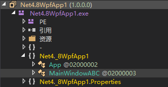
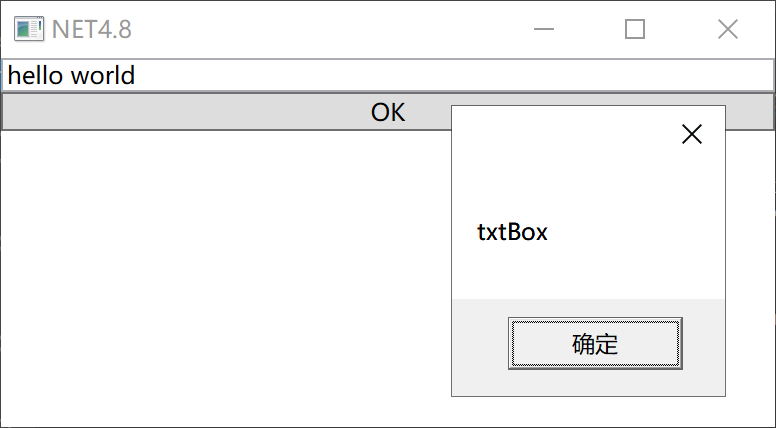
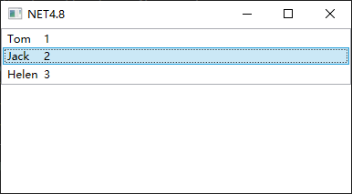
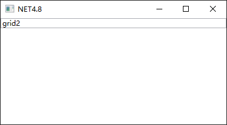
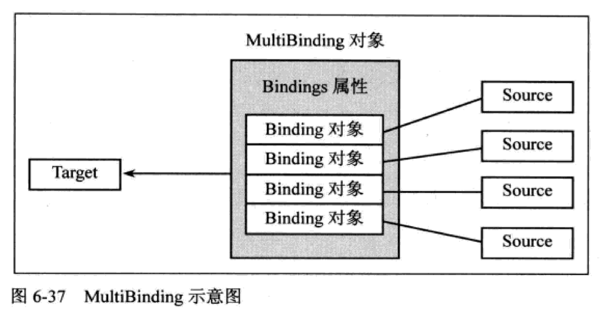
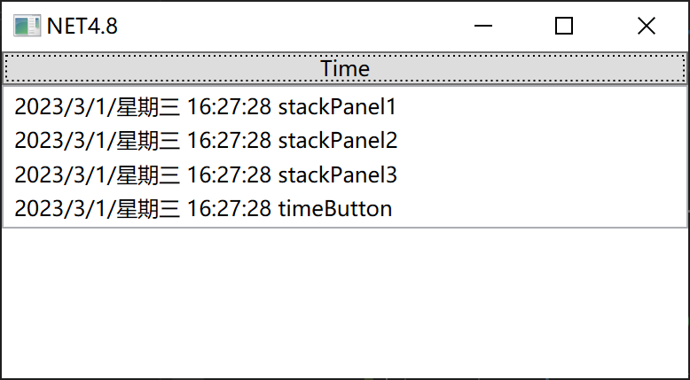
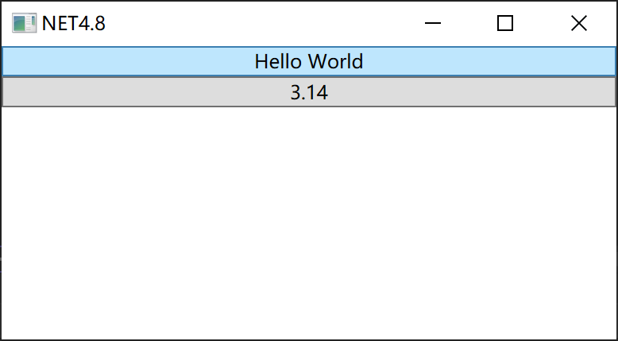
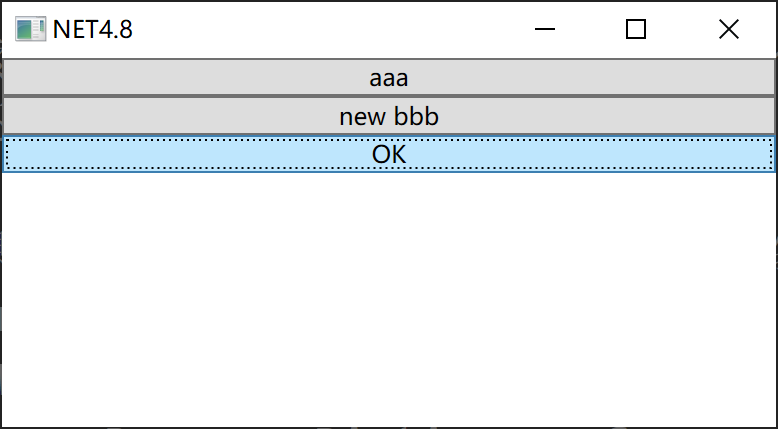

前言
- 什么是WPF
当今大部分程序都是多层架构，一般至少包含3层：
数据层：用于存储数据，多由数据库构成，有时也用数据文件辅助存储。例如医院的药品列表、人员列表、病例列表都存储在这一层。
业务逻辑层：用于根据需求使用计算机程序表达现实业务的逻辑。例如哪些医生可以给哪些病人看病、从挂号到取药有什么流程、从住院到出院有什么流程，都可以由这层实现。这一层一般会通过一组服务(Service)向表示层公开自己的各个功能。因为这一层需要与数据层进行交互，所以常划分出一个“数据访问层(Data Access Layer, DAL)”的子层专门负责数据的存取。
表示层：负责把数据和流程展示给用户看。对于同一组来自业务逻辑层的数据，我们可以选择多种表达方式。例如对于同一张药品单，可用字符串形式、表格形式来展现。表示层还负责展示流程、响应用户操作等。表示层程序也常被称为客户端程序。
WPF的功能就是用来编写应用程序的表示层，业务逻辑层可使用WCF和WF技术。无论使用哪种技术作为表示层技术，程序的逻辑层和数据层都是相同的。
- 为什么学习WPF
只要开发表示层程序，就不可避免地要与4种功能性代码打交道：
数据模型：现实世界中事物和逻辑的抽象。
业务逻辑：数据模型之间的关系与交互。
界面逻辑：控件与控制之间的关系与交互。
用户界面：由控件构成的、与用户进行交互的界面，用于向用户展示数据、响应用户输入。
这4种功能性代码关系如下：
用户界面 <> 界面逻辑 <> 业务逻辑 <==> 数据模型
在保持代码可维护性的前提下，如何让数据顺畅地到达用户界面并灵活显示，同时方便地接手用户操作，这历来都是表示层开发的核心问题。有经久不衰的MVC模式、MVP模式。WinForm、ASP.NET均使用“事件驱动”理念，这种由“事件-订阅-事件处理器”关系交织在一起构成的程序，尽管可以用MVC、MVP等设计模式，但一不小心就会使界面逻辑和业务逻辑纠缠在一起，使代码复杂难懂。WPF则使用“数据驱动”理念。
事件驱动时代，用户每进行一个操作会激发程序发生一个事件，事件发生后，事件处理器就会执行。事件处理器是一个方法，在这个方法中，程序员可以处理数据或调用别的方法，这样程序就在事件的驱动下向前执行了。可见事件驱动时代数据是静态的、被动的，界面是主动的、界面逻辑与业务逻辑之间的桥梁是事件。
数据驱动正好相反，当数据发生变化时，会主动通知界面控件、推动控件展示最新数据，同时用户对控件的操作会直接送达数据，就好像控件是透明的。可见数据驱动理念中数据占主动地位，控件和控件事件被弱化，控件事件一般只参与界面逻辑，不再染指业务逻辑，这使得程序复杂度得到有效控制。数据与界面之间的桥梁是数据关联(Data Binding、Data Template、Control Template等)，通过这个桥梁，数据可以流向界面，再从界面流回数据。
使用WPF开发较之WinForm开发更简单，程序更加简洁清晰。
XAML概览
XAML是什么
网络开发团队的工作大致如下：草图产生后，设计师使用HTML、CSS、JavaScript直接生成UI，程序员则在这个UI生成的同时实现它背后的功能逻辑。有经验的设计师和程序员往往还具备互换工具的能力，因此他们能基于HTML、CSS、JavaScript这个平台进行有效沟通。
XAML也是如此，它在桌面开发中扮演了HTML、CSS、JavaScript这个角色，成为设计师与程序员沟通的枢纽。设计师使用Blend设计UI，程序员使用VS开发后台逻辑代码。UI以XAML形式直接保存进项目，节省了沟通成本。
简单来说，XAML是WPF中专门用来设计UI的语言。
XAML的优点
好用：可以设计出专业的UI和动画。
易学：不需要专业的编程知识，它结构清晰，简单易懂。
高效：使得设计师能直接参与软件开发，随时沟通，无需二次转化。
程序员们一致追求将视图(View，也就是UI)与逻辑代码分离，以往的开发模式中，很难保证UI代码完全不与逻辑代码纠缠(称为UI与逻辑的紧耦合)。UI与逻辑的紧耦合后果如下：
无论软件功能还是UI设计有所变化或出bug，都将导致大量代码修改。
逻辑代码更加难以理解，读懂并修改代码往往比重写更困难。
重用代码逻辑变为不可能。
XAML的另一个巨大优点是真正实现了UI与逻辑的剥离。XAML是一种单纯的声明性语言，只能用来声明一些UI元素、绘制UI和动画(XAML里动画无需编程即可实现)，根本无法在其中加入程序逻辑，这就强制地把逻辑代码从UI代码中赶走了。这样，与UI相关的代码位于程序UI层，与逻辑相关的代码位于程序逻辑层，形成了一种“高内聚-低耦合”的结构。因此无论是对UI做较大改动或是重用底层逻辑，都不会费太大力气。
从零起步认识XAML
新建一个.NET4.8的WPF应用程序，其MainWindow.xaml文件内容如下：
<Window x:Class="Net4._8WpfApp1.MainWindow"
xmlns="http://schemas.microsoft.com/winfx/2006/xaml/presentation"
xmlns:x="http://schemas.microsoft.com/winfx/2006/xaml"
xmlns:d="http://schemas.microsoft.com/expression/blend/2008"
xmlns:mc="http://schemas.openxmlformats.org/markup-compatibility/2006"
xmlns:local="clr-namespace:Net4._8WpfApp1"
mc:Ignorable="d"
Title="MainWindow" Height="450" Width="800">
<Grid>
</Grid>
</Window>
XAML语言是从XML语言派生出来的，XML语言有一个功能，可以在XML文档标签上使用xmlns特征(attribute)来定义名称空间，xmlns是XML-namespace的缩写。定义名称空间的好处是，当来源不同的类重名时，可使用名称空间加以区分。xmlns特征的语法格式如下：
xmlns[:可选的映射前缀]="名称空间"
如果没有映射前缀，意味着这个名称空间是默认名称空间，所有来自默认名称空间的标签都不用加前缀。默认名称空间只能有一个，应该选择其中元素被使用最频繁的名称空间来作为默认名称空间。上例中，Window和Grid都来自默认名称空间，而第1行的Class特征则来自于第3行中x前缀对应的名称空间。这里做一个实验，如果给第2行的名称空间加一个前缀n，那么Window和Grid也要加前缀n才能通过编译：
<n:Window x:Class="Net4._8WpfApp1.MainWindow"
xmlns:n="http://schemas.microsoft.com/winfx/2006/xaml/presentation"
xmlns:x="http://schemas.microsoft.com/winfx/2006/xaml"
xmlns:d="http://schemas.microsoft.com/expression/blend/2008"
xmlns:mc="http://schemas.openxmlformats.org/markup-compatibility/2006"
xmlns:local="clr-namespace:Net4._8WpfApp1"
mc:Ignorable="d"
Title="MainWindow" Height="450" Width="800">
<n:Grid>
</n:Grid>
</n:Window>
如果想在C#代码中引用外来程序集，首先添加程序集引用，然后写using指令引入名称空间。XAML中也类似，首先引用程序集，然后在根元素的起始标签中写上一句xmlns来定义名称空间，下例要引用PresentationFramework.dll中的System.Windows.Controls.Button类，定义了前缀为c的名称空间，引用Button时也要加前缀c。同时由于默认名称空间已经引入了包括PresentationFramework.dll在内的很多程序集，所以Button也可以不加前缀：
<Window x:Class="Net4._8WpfApp1.MainWindow"
xmlns="http://schemas.microsoft.com/winfx/2006/xaml/presentation"
xmlns:x="http://schemas.microsoft.com/winfx/2006/xaml"
xmlns:d="http://schemas.microsoft.com/expression/blend/2008"
xmlns:mc="http://schemas.openxmlformats.org/markup-compatibility/2006"
xmlns:c="clr-namespace:System.Windows.Controls;assembly=PresentationFramework"
xmlns:local="clr-namespace:Net4._8WpfApp1"
mc:Ignorable="d"
Title="MainWindow" Height="450" Width="800">
<Grid>
<c:Button>OK</c:Button>
<Button>OK</Button>
</Grid>
</Window>
第1个名称空间xmlns="http://schemas.microsoft.com/winfx/2006/xaml/presentation"对应的是与绘制UI相关的程序集，是表示层面上的东西，其名字中带有presentation一词也可见一斑。
第2个名称空间xmlns:x="http://schemas.microsoft.com/winfx/2006/xaml"对应一些与XAML语法和编译相关的CLR名称空间，让XAML语言解析处理相关程序集，是语言层面上的东西。
x:Class="Net4._8WpfApp1.MainWindow"这个特征(Attribute)的作用是当XAML解析器将包含它的标签(此处是Window)解析成C#类后，它的类名是什么，并和对应部分类合并。
App.xaml文件内容如下：
<Application x:Class="Net4._8WpfApp1.App"
xmlns="http://schemas.microsoft.com/winfx/2006/xaml/presentation"
xmlns:x="http://schemas.microsoft.com/winfx/2006/xaml"
xmlns:local="clr-namespace:Net4._8WpfApp1"
StartupUri="MainWindow.xaml">
<Application.Resources>
</Application.Resources>
</Application>
注意其中有一句StartupUri="MainWindow.xaml"，这告诉编译器把由MainWindow.xaml解析后生成的窗体作为程序启动时的主窗体。只要MainWindow.xaml能解析为一个窗体，程序就能正常运行。
做个实验，将MainWindow.xaml中的x:Class="Net4._8WpfApp1.MainWindow"改为x:Class="Net4._8WpfApp1.MainWindowABC"，同时删除MainWindow.cs文件，程序依然可以正常运行，通过dnspy可查看到生成了MainWindowABC类。

系统学习XAML语法
XAML文档的树形结构
XAML文档基本以Window对象为根节点，一层层向下包含，这种树形结构深刻影响着WPF的属性(Property)子系统和事件(Event)子系统。在实践编程中，我们经常需要在这棵树上进行按名称查找元素、获取父子节点等操作。为了方便操作这棵树，WPF基本类库里提供了VisualTreeHelper和LogicalTreeHelper两个助手类(Helper Class)，同时在一些重要的基类里封装了一些专门用于操作这棵树的方法。
XAML中为对象属性赋值的语法
XAML中为对象属性赋值有2种方法：
使用字符串进行简单赋值
使用属性元素(Property Element)进行复杂赋值
使用标签的Attribute为对象属性赋值
<Grid>
<Rectangle x:Name="rect" Fill="Blue" Height="100" Width="200"></Rectangle>
</Grid>
Rectangle中Fill的类型是Brush，字符串"Blue"最终被翻译为SolidColorBrush对象，用C#代码表示是这样：
this.rect.Fill = new SolidColorBrush(Colors.Blue);
通过这种Attribute=Value的语法进行赋值时，Value只能是字符串值，这就引出了2个问题：
- 如果一个类能用XAML语言声明，并允许它的Property与XAML标签的Attribute互相映射，那就需要为这些Property准备适当的转换机制。
- 由于Value是个字符串，所以其复杂程度有限，如何设计让字符串转换成复杂的目标对象呢？
第1个问题的解决方案是使用TypeConverter类的派生类并重写TypeConverter的一些方法。
第2个问题的解决方案是使用属性元素(Property Element)。
使用TypeConverter类将XAML标签的Attribute与对象的Property进行映射
现有这样的类：
class Human {
public string Name { get; set; }
public Human Child { get; set; }
}
想在XAML中这样写，期望能给Human类实例的Child属性赋一个Human类的值，且Child.Name就是这个字符串的值"Tom"：
<Window.Resources>
<local:Human x:Key="human" Child="Tom"/>
</Window.Resources>
private void Button_Click(object sender, RoutedEventArgs e) {
var human = (Human)this.FindResource("human"); //异常，无法转换
MessageBox.Show(human.Child.Name);
}
为了将字符串转化为对象，可以使用TypeConverter和TypeConverterAttribute两个类。
先从TypeConverter派生出一个类，重写相关方法：
class StringToHumanConverter : TypeConverter {
public override object ConvertFrom(ITypeDescriptorContext context, CultureInfo culture, object value) {
if (value is string str) { //参数value就是我们在XAML文档中设置的值
Human human = new Human() { Name = str };
return human;
}
return base.ConvertFrom(context, culture, value);
}
//其它方法按需重载，具体参考类库文档
}
但这还不够，还需要使用TypeConverterAttribute这个特征类把StringToHumanConverter类“粘贴”到Human类上：
//这里可以省略Attribute后缀，但要认清使用的是TypeConverterAttribute类，而非TypeConverter类。
[TypeConverterAttribute(typeof(StringToHumanConverter))]
class Human {
public string Name { get; set; }
public Human Child { get; set; }
}
单击按钮，效果如下：
属性元素
XAML中非空标签都有自己的内容(Content)，标签内容就是起始标签和结束标签之间的一些子级标签，每个子级标签都是父级标签内容的一个元素(Element)，属性元素就是以元素形式表达一个实例的属性。改写之前Rectangle的例子：
<Rectangle x:Name="rect" Height="100" Width="200">
<Rectangle.Fill>
<SolidColorBrush Color="Blue"/>
</Rectangle.Fill>
</Rectangle>
这种语法应用于复杂对象时很有用，例如：
<Rectangle x:Name="rect" Height="100" Width="200">
<Rectangle.Fill>
<LinearGradientBrush>
<LinearGradientBrush.GradientStops>
<GradientStop Offset="0.2" Color="LightBlue"/>
<GradientStop Offset="0.7" Color="Blue"/>
<GradientStop Offset="1.0" Color="DarkBlue"/>
</LinearGradientBrush.GradientStops>
</LinearGradientBrush>
</Rectangle.Fill>
</Rectangle>
标记扩展(Markup Extensions)
大多数赋值都是为属性生成一个新对象，但有时候需要把同一个对象赋值给两个对象的属性，有时候需要给对象的属性赋值为null，还有时候需要将一个对象的属性值依赖在其它对象的某个属性上。当需要进行这些特殊赋值时，就需要使用标记扩展了。
所谓标记扩展，实际上是一种特殊的Attribute=Value语法，其中Value字符串是由一对花括号及其括起来的内容组成，XAML编译器会对这样的内容做出解析，生成相应对象。
使用Binding类的实例将TextBox的Text属性依赖在Slider的Value上，这样当Slider的滑块移动时，TextBox会显示Slider的当前值：
<StackPanel>
<Slider x:Name="slider"></Slider>
<TextBox Text="{Binding ElementName=slider, Path=Value, Mode=OneWay}" Margin="5"></TextBox>
<!-- 也可以用属性标签的形式来替换标记扩展，只是不够简洁 -->
<TextBox>
<TextBox.Text>
<Binding ElementName="slider" Path="Value" Mode="OneWay"/>
</TextBox.Text>
</TextBox>
</StackPanel>
其中，Text="{Binding ElementName=slider, Path=Value, Mode=OneWay}"这句是标记扩展，分析如下：
编译器看到这句代码时，会把花括号里的内容解析成对象.
对象的数据类型是紧邻左花括号的字符串，即Binding。
对象的属性由一串以逗号连接的子字符串负责初始化，注意，属性值不再加引号。
只有MarkupExtension类的派生类才能使用标记扩展语法来创建对象。
使用标记扩展时要注意以下几点：
标记扩展可以嵌套，例如：
<Window.Resources>
<local:Human x:Key="human" Name="fatherName" Child="Tom"/>
</Window.Resources>
<StackPanel>
<TextBox Text="{Binding Source={StaticResource human}, Path=Name}"></TextBox>
</StackPanel>
扩展标记可以简写，例如：
<StackPanel>
<Slider x:Name="slider"></Slider>
<!-- 等价 -->
<TextBox Text="{Binding Value, ElementName=slider, Mode=OneWay}"></TextBox>
<TextBox Text="{Binding Path=Value, ElementName=slider, Mode=OneWay}"></TextBox>
<!-- 等价 -->
<TextBox Text="{Binding Source={StaticResource human}, Path=Name}"></TextBox>
<TextBox Text="{Binding Source={StaticResource ResourceKey=human}, Path=Name}"></TextBox>
</StackPanel>
这两种写法中，前者称为固定位置参数(Positional Parameter)，后者称为具名参数(Named Parameters)。固定位置参数实际就是标记扩展类构造器的参数，其位置由构造器参数列表决定。
标记扩展类的类名以Extension结尾，在XAML中使用时可省略Extension后缀：
<!-- 等价 -->
<TextBox Text="{Binding Source={StaticResource ResourceKey=human}, Path=Name}"></TextBox>
<TextBox Text="{Binding Source={StaticResourceExtension ResourceKey=human}, Path=Name}"></TextBox>
导入程序集和引用其中的名称空间
大多数情况下，根据架构设计，一个程序会被分成若干个相对独立的模块来编写，每个模块可独立编译、进行版本升级。模块之间会存在一些依赖关系，即有些模块需要借用其它模块中的功能。.NET的模块称为程序集(Assembly)，例如用VS新建一个解决方案，解决方案中会包含若干个项目，每个项目的编译结果就是一个程序集。常见的程序集以exe或dll为后缀名，由于.NET API以类和类级别的单元为主，所以我们也常把引用程序集说成引用类库。
导入程序集和引用其中的名称空间在上文已经演示过，不再赘述。
x名称空间详解
X名称空间里有什么
x名称空间里的成员(例如x:Name、x:Class)是专门写给XAML编译器看的，用来引导XAML编译器把XAML代码解析编译成中间语言，存储在程序集中。在解析编译XAML的过程中，我们经常需要告诉编译器一些重要信息，例如XAML代码的编译结果和哪个C#代码的编译结果合并、使用XAML声明的元素是public还是private等。这些与XAML编译器沟通的工具都存放在x名称空间中。
x名称空间中的Attribute
前面我们已经知道Attribute和Property是两个层面的东西。Attribute是语言层面的、给编译器看的，Property是面向对象层面的、给编程逻辑用的。例如x:Class="目标类名"这样一个Attribute告诉编译器要和哪个类合并，x:Class这个Attribute并不是对象成员，而是我们把它从x名称空间拿出来硬贴上去的。
下面我们来看看常用Attribute。
x:Class
这个Attribute告诉XAML编译器将XAML标签的编译结果与后台代码中指定的类合并。使用x:Class时必须遵循以下要求：
x:Class只能用于根节点。
该根节点的类型要与x:Class的值所指示的类型保持一致。
x:Class的值所指示的类型在声明时必须使用partial关键字。
x:ClassModifier
这个Attribute告诉XAML编译器由标签生成的类具有怎样的访问控制级别。使用x:ClassModifier要注意：
标签必须具有x:Class。
x:ClassModifier的值必须与x:Class所指示类的访问控制级别一致。
x:ClassModifier的值随后台代码的编译语言不同而不同，参见TypeAttributes枚举类型。
例如新建一个WPF应用程序并编译，用dnspy打开，可观察到MainWindow类是public访问权限。下面修改XAML标记：
<Window x:Class="Net4._8WpfApp1.MainWindow" x:ClassModifier="internal">
</Window>
此时编译会收到一个编译错误，因为C#代码里MainWindow是public访问权限。只需将C#代码中MainWindow的访问权限从public改为internal，编译即可通过。再用dnspy打开，可观察到MainWindow类是internal访问权限。
x:Name
x:Name作用有两个：
告诉XAML编译器，为这个标签创建一个引用变量，变量名就是x:Name所设置的值。
将这个标签所对应对象的Name属性(如果有的话)也设为x:Name所设置的值，并把这个值注册到UI树上，方便查找。
一个XAML标签就声明了一个对象，这个对象一般是某控件的实例。如何在代码中访问这个对象呢？看下面的例子：
<Window>
<StackPanel>
<TextBox>hello world</TextBox>
<Button Click="Button_Click">OK</Button>
</StackPanel>
</Window>
我们可以通过层级关系来找到我们最终想要的控件：
private void Button_Click(object sender, RoutedEventArgs e) {
StackPanel stackPanel = (StackPanel)this.Content;
TextBox textBox = (TextBox)stackPanel.Children[0];
if (string.IsNullOrEmpty(textBox.Name)) {
MessageBox.Show("No Name");
}
else {
MessageBox.Show(textBox.Name);
}
}
不过这种方法有些繁琐，如果我们需要为对象准备一个引用变量并在代码中直接访问，那就必须显式告诉XAML编译器，使用x:Name可为这个对象声明变量：
<TextBox x:Name="txtBox">hello world</TextBox>
之后可直接引用txtBox这个变量访问对应的实例：
private void Button_Click(object sender, RoutedEventArgs e) {
if (string.IsNullOrEmpty(txtBox.Name)) {
MessageBox.Show("No Name");
}
else {
MessageBox.Show(txtBox.Name);
}
}

单击按钮后弹窗出现字符串"txtBox"，说明x:Name不但让编译器声明了引用变量，而且将实例的Name属性也赋值为字符串"txtBox"。使用dnspy查看，发了Window类中多了一个成员：
public class MainWindow : Window, IComponentConnector {
//...
internal TextBox txtBox;
}
注意，如果一个标签对应的实例没有Name这个成员，那么x:Name的作用就只剩下让编译器为这个实例创建引用变量了。通常在XAML代码中写x:Name和Name是一样的，除非该对象没有Name属性，那就只能写为x:Name。因为x:Name涵盖了Name属性的功能，所以全部使用x:Name可增强代码的一致性和可读性。
x:FieldModifier
从上文可知，使用x:Name后，对应的实例就有了自己的引用变量，这些变量都是类的字段，访问级别是internal。有时我们需要从一个程序集访问另一个程序集窗体中的元素，这就需要把目标元素的引用变量设置为public。x:FieldModifier可在XAML中设置引用变量的访问级别：
<TextBox x:Name="txtBox" x:FieldModifier="public">hello world</TextBox>
使用dnspy打开，可观察到是public权限：
public class MainWindow : Window, IComponentConnector {
//...
public TextBox txtBox;
}
x:Key
最自然的检索方式莫过于key-value的形式了，在XAML中我们可以把需要多次使用的内容放在资源字典(Resource Dictionary)里，需要使用该资源时就用它的key将其检索出来。
x:Key的作用就是为资源贴上用于检索的索引。几乎每个WPF元素都有自己的Resources属性，这个属性是key-value式的集合。只要把元素放进这个集合，该元素就成为集合中的一个条目，可通过Key将其索引出来。
<Window x:Class="Net4._8WpfApp1.MainWindow"
xmlns:local="clr-namespace:Net4._8WpfApp1"
xmlns:sys="clr-namespace:System;assembly=mscorlib">
<Window.Resources>
<sys:String x:Key="myString">hello world</sys:String>
</Window.Resources>
<StackPanel>
<TextBox Text="{StaticResource myString}"></TextBox>
<Button Click="Button_Click">OK</Button>
</StackPanel>
</Window>
程序一运行即可观察到TextBox中已经显示了资源字符串的值。
也可以通过代码检索资源，检索到之后将其恢复成正确的数据类型就可使用了：
private void Button_Click(object sender, RoutedEventArgs e) {
string str = (String)this.FindResource("myString");
MessageBox.Show(str);
}
x:Shared
默认情况下，我们通过x:Key检索出来的对象都是同一个对象，如果将资源设置为x:Shared="false"，那么我们每次检索都会得到这个对象的一个新副本。XAML编译器默认将资源设置为x:Shared="true"，即每次检索得到同一个对象。
<sys:String x:Key="myString" x:Shared="false">hello world</sys:String>
x名称空间中的标记扩展
前面说过标记扩展(Markup Extension)是实际上是MarkupExtension类的直接或间接派生类。x名称空间中包含有这样一些类，所以常称它们为x名称空间内的标记扩展。下面看看常用的标记扩展。
x:Type
x:Type的值应该是一个数据类型的名称，当我们想在XAML中表达某个数据类型时就需要使用x:Type标记扩展。比如某个类的一个属性，它的值要求是一种数据类型，当我们在XAML中为该属性赋值时就要用到x:Type。
例如，我们首先创建了一个MyButton类，派生自Button：
class MyButton : Button {
public Type UserWindowType { get; set; }
protected override void OnClick() {
base.OnClick(); //激发OnClick事件，测试发现注释后依然有效
Window win = (Window)Activator.CreateInstance(UserWindowType); //使用指定类型的默认构造函数来创建实例
win.ShowDialog();
}
}
然后在项目中右键添加一个WPF窗口类，取名为MyWindow，随意添加几个控件：
<Window x:Class="Net4._8WpfApp1.MyWindow"
xmlns="http://schemas.microsoft.com/winfx/2006/xaml/presentation"
xmlns:x="http://schemas.microsoft.com/winfx/2006/xaml"
xmlns:d="http://schemas.microsoft.com/expression/blend/2008"
xmlns:mc="http://schemas.openxmlformats.org/markup-compatibility/2006"
xmlns:local="clr-namespace:Net4._8WpfApp1"
mc:Ignorable="d"
Title="MyWindow" Height="100" Width="180">
<StackPanel>
<TextBox/>
<TextBox/>
<Button>OK</Button>
</StackPanel>
</Window>
最后将MyButton这个自定义按钮添加到主窗口的界面上，并把MyWindow作为一种数据类型赋值给MyButton的UserWindowType属性：
<Window x:Class="Net4._8WpfApp1.MainWindow"
xmlns="http://schemas.microsoft.com/winfx/2006/xaml/presentation"
xmlns:x="http://schemas.microsoft.com/winfx/2006/xaml"
xmlns:d="http://schemas.microsoft.com/expression/blend/2008"
xmlns:mc="http://schemas.openxmlformats.org/markup-compatibility/2006"
xmlns:local="clr-namespace:Net4._8WpfApp1"
xmlns:sys="clr-namespace:System;assembly=mscorlib"
mc:Ignorable="d"
Title="NET4.8" Height="220" Width="400">
<StackPanel>
<local:MyButton Content="Show" UserWindowType="{x:Type local:MyWindow}"/>
</StackPanel>
</Window>
单击主窗口上的按钮，自定义窗体就会显示出来，我们还可以再写几个MyWindow2、MyWindow3，到时候只需要在XAML标记里更换UserWindowType的值即可。
x:Null
在XAML里，用x:Null来表示空值。大多数时候我们不需要显式地为一个属性赋值为null，但如果一个属性具有默认值而我们又不需要该默认值，就要用x:Null显式设置了。
下面的例子设置了Style的TargetType，因此所有Button都会默认使用这个Style，除非显式指定其它Style：
<Window.Resources>
<Style TargetType="{x:Type Button}">
<Setter Property="Background" Value="LightGreen"/>
<Setter Property="Foreground" Value="Red"/>
<Setter Property="FontWeight" Value="Bold"/>
</Style>
</Window.Resources>
<StackPanel>
<Button>1</Button>
<Button>2</Button>
<Button Style="{x:Null}">3</Button>
</StackPanel>
x:Array
x:Array的作用就是向使用者暴露一个类型已知的ArrayList实例，ArrayList内成员的类型由x:Array的Type指明。在WPF中把包含数据的对象称为数据源(Data Source)，如果想把一个x:Array的实例作为数据源提供给ListBox的话，XAML标记如下：
<ListBox>
<ListBox.ItemsSource>
<x:Array Type="sys:String">
<sys:String>hello</sys:String>
<sys:String>world</sys:String>
</x:Array>
</ListBox.ItemsSource>
</ListBox>
在解析x:Array标签时编译器会生成调用ArrayExtension的AddChild的方法将子元素逐个添加到ArrayExtension实例的Items属性里。
x:Static
x:Static可在XAML中使用数据类型的static成员，属性或字段皆可访问。
下面在MainWindow中加入1个public static属性和1个public static字段：
public partial class MainWindow : Window {
public static string Name1 { get; set; } = "hello";
public static string Name2 = "world";
public MainWindow() {
InitializeComponent();
}
}
在XAML中使用x:Static来访问：
<StackPanel>
<TextBlock Text="{x:Static local:MainWindow.Name1}"/>
<TextBlock Text="{x:Static local:MainWindow.Name2}"/>
</StackPanel>
如果一个程序需要国际化支持，一般会把需要显示的字符串保存在一个资源类的static属性中，因此该程序对x:Static的使用十分频繁。
XAML指令元素
XAML指令元素只有2个：
x:Code
x:XData
x:Code可包含一些原本放在C#文件中的代码。
x:XData是一个专用标签。WPF中把包含数据的对象称为数据源，将数据源中数据提供给使用者的对象称为数据提供者(Data Provider)。WPF类库中有许多数据提供者，例如XmlDataProvider，专门用于提供XML化的数据。
TODO：认为不重要，没看。
控件与布局
控件到底是什么
从现在开始要在心中树立起这样一个概念，即WPF中是数据驱动UI，数据是核心，是主动的；UI从属于数据并表达数据，是被动的。
WPF把能够展示数据、响应用户操作的UI元素称为控件(Control)，控件所展示的数据，我们称之为控件的“数据内容”，控件响应用户操作后执行的方法或事件，我们称之为控件的“行为”或“算法内容”。
控件继承层次如下：
DispatcherObject
DependencyObject
Visual
UIElement
FrameworkElement
Control
ItemsControl
HeaderedItemsControl
ContentControl
HeaderedContentControl
ButtonBase
Button
TextBoxBase
TextBox
Panel
Grid
TextBlock
Image
WPF的内容模型
因为允许嵌套控件，所以WPF的UI会形成一个树形结构。WPF控件一般由更基本的控件构成，如果不考虑控件内部的组成结构，只观察由控件组成的“树”，那么这棵树称为逻辑树(Logicl Tree)。如果连组成控件的更基本控件也一起考虑，那么这棵更繁茂树称为可视化树(Visual Tree)。
控件通过内容属性(Content Property)引用着作为其内容的对象。内容属性是个统称，具体到每种控件，内容属性都有自己确切的名字，例如Content、Child、Children、Items等。
各类内容模型详解
我们把符合某类内容模型的UI元素称为一个族，每个族用它们的共同基类来命名。注意，有些族省略，因为比较简单。
ContentControl族
特点：
均派生自ContentControl类
都是控件
内容属性的名称为Content
只能由单一元素充当其内容
ItemsControl族
特点：
均派生自ItemsControl类
都是控件，用于显示列表化的数据
内容属性为Items或ItemsSource
每种ItemsControl都对应有自己的条目容器(Item Container)
本族控件最有特色点的就是会自动使用条目容器对提交给它的内容进行包装，合法的ItemsControl的内容一定是个集合。当我们把这个集合作为内容提交给ItemsControl时，ItemsControl不会把这个集合直接拿来用，而是使用自己对应的条目容器把集合中的条目逐个包装，再把包装好的条目序列当作自己的内容。这样做的好处是允许程序员向ItemsControl提交各种数据类型的集合。如果要增删改或排序，那么直接操作数据即可，UI会自动将改变展现出来。这正体现了WPF数据驱动UI的特性。
首先，我们看看VisualTree的自动包装：
<Grid>
<ListBox>
<CheckBox>checkbox1</CheckBox>
<CheckBox>checkbox2</CheckBox>
<CheckBox>checkbox3</CheckBox>
<Button>button1</Button>
<Button>button2</Button>
<Button>button3</Button>
</ListBox>
</Grid>
我们看看button3的父级容器是什么：
private void Button3_Click(object sender, RoutedEventArgs e) {
Button btn = (Button)sender;
DependencyObject level1 = VisualTreeHelper.GetParent(btn);
DependencyObject level2 = VisualTreeHelper.GetParent(level1);
DependencyObject level3 = VisualTreeHelper.GetParent(level2);
MessageBox.Show($" {level1.GetType()}\n {level2.GetType()}\n {level3.GetType()}\n");
}
可以发现button3的父级容器是ListBoxItem。前面我们知道WPF的UI是树形结构，VisualTreeHelper就是帮助我们在可视化树上进行导航的辅助类。我们沿着被单击的Button一层层往上找，到第三层发现是一个ListBoxItem。无论把什么样的数据集合交给ListBox，它都会以这种方式进行自动包装。
假设程序中有Employee类：
<Grid>
<ListBox x:Name="lstBox" SelectionChanged="lstBox_SelectionChanged">
</ListBox>
</Grid>
class Employee {
public int Id { get; set; }
public string Name { get; set; }
public Employee(int id, string name) {
Id = id;
Name = name;
}
}
public MainWindow() {
InitializeComponent();
List<Employee> employees = new List<Employee>() {
new Employee(1, "Tom"),
new Employee(2, "Jack"),
new Employee(3, "Helen"),
new Employee(4, "Smith"),
};
lstBox.ItemsSource = employees;
lstBox.DisplayMemberPath = "Name"; //告诉ListBox显示每条数据的哪个属性，换句话说，调用该属性的ToString方法，将得到的字符串放入TextBlock中，再把TextBlock包装进一个ListBoxItem中
lstBox.SelectedValuePath = "Id"; //ListBox的SelectedValuePath属性会与其SelectedValue属性配合使用。当我们调用SelectedValue属性时，ListBox先找到选中Item对应的数据对象，然后把SelectedValuePath的值作为数据对象的属性名称，并把这个属性的值取出来
}
private void lstBox_SelectionChanged(object sender, SelectionChangedEventArgs e) {
MessageBox.Show(lstBox.SelectedValue.ToString());
}
DisplayMemberPath和SelectedValuePath是两个相当简化的属性。DisplayMemberPath只能显示简单的字符串，可以用功能更加强大的DataTemplate。SelectedValuePath也只能返回单一的值，不妨直接使用SelectedItem和SelectedItems属性，它们返回的是数据集合中的对象。
Panel族
特点：
派生自Panel抽象类
主要功能是控制UI布局
内容属性为Children
内容可以是多个元素，Panel元素将控制它们的布局
深入浅出话Binding
Binding基础
如果把Binding比作数据的桥梁，那么它的两端分别是Binding的源(Source)和目标(Target)。源是数据从哪里来，目标是数据往哪里去。一般情况下，Binding源是逻辑层对象，Binding目标是UI层控件对象。这样数据就会源源不断通过Binding送达UI层、被UI层展现，也就完成了数据驱动UI的过程。我们可以想象Binding这座桥梁上铺设了高速公路，不但可以控制在源与目标之间是双向通行还是某个方向单向通行，还可以控制对数据放行的时机，甚至在桥上架设关卡用来转换数据类型或校验数据。
下面创建一个简单的数据源并通过Binding把它连接到UI元素上。
首先创建一个名为Student的类，该类的实例将作为数据源使用。
class Student {
private string _name;
public string Name {
get { return _name; }
set { _name = value; }
}
public Student(string name) {
_name = name;
}
}
数据源是一个对象，对象一般通过属性向外界暴露数据，那么哪个属性是我们想通过Binding送达UI元素的呢？换句话说，UI关心哪个属性值的变化，这个属性就称为Binding的路径(Path)。但只有路径还不行，值变化后属性要有能力通知Binding，因此我们要让作为数据源的类实现INotifyPropertyChanged接口。当为Binding设置数据源后，Binding就会自动侦听其PropertyChanged事件。
class Student :INotifyPropertyChanged{
public event PropertyChangedEventHandler PropertyChanged;
private string _name;
public string Name {
get { return _name; }
set {
if (_name != value) {
_name = value;
PropertyChanged.Invoke(this, new PropertyChangedEventArgs("Name"));
//OnPropertyChanged();//或者直接调用这一句
}
}
}
//public void OnPropertyChanged([CallerMemberName] string propertyName = null) {
// PropertyChanged.Invoke(this, new PropertyChangedEventArgs(propertyName));
//}
public Student(string name) {
_name = name;
}
}
经过这样一升级，当Name属性的值发生变化时，就会激发PropertyChanged事件，Binding接收到这个事件后发现是名为Name的属性值发生了变化，于是通知Binding目标端的UI元素显示新值。
<StackPanel>
<TextBox x:Name="textBox"></TextBox>
<Button Click="Button_Click">Change Name</Button>
</StackPanel>
使用Binding把数据源和UI元素连接起来：
public partial class MainWindow : Window {
private Student _stu;
public MainWindow() {
InitializeComponent();
_stu = new Student("Jack"); //这个实例就是数据源
Binding binding = new Binding("Name") {
Source = _stu
};
BindingOperations.SetBinding(textBox,TextBox.TextProperty, binding);
//textBox.SetBinding(TextBox.TextProperty, binding);或者这样写
}
private void Button_Click(object sender, RoutedEventArgs e) {
_stu.Name += "Name";
}
}
通过这个例子，我们已经在头脑中建立了以下模型：
Binding的源与路径
除了使用上述公开了属性的对象作为数据源外，我们还有更多选择，例如：
- 控件把自己或自己的元素作为源
- 用一个控件作为另一个控件的数据源
- 把集合作为ItemsControl的数据源
- 使用XML作为TreeView或Menu的数据源
- 把多个控件关联到一个“数据制高点”上，甚至干脆不给Binding指定源，让它自己去找
把控件作为Binding源与Binding标记扩展
大多数情况下Binding的源是逻辑层对象，但有时候为了让UI元素产生一些联动效果，也会使用Binding在控件间建立关联。下面把TextBox的Text属性关联在Slider的Value属性上。
<StackPanel>
<Slider x:Name="slider"></Slider>
<TextBox Text="{Binding Path=Value, ElementName=slider}"></TextBox>
<!-- Binding类的构造器接受一个Path作为参数，所以可以这样写： -->
<TextBox Text="{Binding Value, ElementName=slider}"></TextBox>
</StackPanel>
在C#代码中可以访问XAML代码中声明的变量，但XAML中无法访问C#代码中声明的变量。因此想要在XAML中建立UI元素与逻辑层对象的Binding，需要把逻辑层对象声明为XAML中的资源(Resource)，我们会在资源一章进行讲解。
也可以用代码实现绑定：
Binding binding = new Binding("Value") { ElementName = "slider" };
//Binding binding = new Binding("Value") { Source = slider };//在代码中一般直接把对象赋值给Source属性，而不会使用ElementName
textBox.SetBinding(TextBox.TextProperty, binding);
控制Binding的方向及数据更新
默认情况下，数据既能通过Binding送达目标，也能够从目标返回源(收集用户对数据的修改)。有时候数据只需要展示给用户而不允许修改，这时可把Binding的模式更改为从源向目标的单向沟通。Binding还支持从目标向源的单项沟通、只在Binding关系确立时读取一次数据，这需要我们根据实际情况去选择。
控制binding数据流向的属性是Mode，它的类型是BindingMode枚举，BindingMode枚举取值如下：
- TwoWay
- OneWay
- OneTime
- OneWayToSource
- Default：Binding的模式根据实际情况确定，若是可编辑的(例如TextBox的Text属性)，Default就采用双向模式，若是只读的(TextBlock的Text属性)则采用单向模式。
在前面的例子中，我们拖动Slider的手柄时，TextBox中就会显示Slider的当前值。如果我们在TextBox中输入一个恰当的值并使焦点离开TextBox，则Slider的手柄会跳到相应的值那里。为何在TextBox失去焦点后，Slider的值才会改变呢？这就引出了Binding的另一个属性，即UpdateSourceTrigger，它的类型是一个枚举，取值如下：
- Default
- PropertyChanged
- LostFocus
- Explicit
将UpdateSourceTrigger设为PropertyChanged，即可立即更新。
<StackPanel>
<Slider x:Name="slider"></Slider>
<TextBox Text="{Binding Value, ElementName=slider, UpdateSourceTrigger=PropertyChanged}"></TextBox>
</StackPanel>
顺便一提，Binding还有NotifyOnSourceUpdated、NotifyOnTargetUpdated两个bool属性，如果设置为true，则可以监听SourceUpdated、TargetUpdated事件，用来找出哪些数据或控件被更新了。
<TextBox Text="{Binding Value, ElementName=slider, UpdateSourceTrigger=PropertyChanged, NotifyOnSourceUpdated=True, NotifyOnTargetUpdated=True}"
SourceUpdated="TextBox_SourceUpdated" TargetUpdated="TextBox_TargetUpdated"></TextBox>
Binding的路径(Path)
作为Binding源的对象可能有很多属性，那么Binding到底需要关注哪个属性的值呢？这就要由Binding的Path属性来指定了。先前的例子中，我们把Slider作为源，其Value属性作为路径。
<TextBox x:Name="textBox" Text="{Binding ElementName=slider,Path=Value}"></TextBox>
与之等价的C#代码是：
Binding binding = new Binding() {
Path = new PropertyPath("Value"),
Source = slider
};
textBox.SetBinding(TextBox.TextProperty, binding);
Binding还支持多级路径，通俗地讲就是一路“点”下去，例如让一个TextBox显示另一个TextBox的文本长度：
<TextBox Text="{Binding ElementName=textBox,Path=Text.Length,Mode=OneWay}"></TextBox>
等效的C#代码：
Binding binding = new Binding("Text.Length") {
Source = textBox,
Mode = BindingMode.OneWay,
};
textBoxSecond.SetBinding(TextBox.TextProperty, binding);
让一个TextBox显示另一个TextBox文本中下标为4的字符：
<TextBox x:Name="textBoxSecond" Text="{Binding ElementName=textBox,Path=Text.[4],Mode=OneWay}"></TextBox>
<!-- 或者把.省略，直接写为Text[4] -->
<TextBox x:Name="textBoxSecond" Text="{Binding ElementName=textBox,Path=Text[4],Mode=OneWay}"></TextBox>
等效的C#代码：
Binding binding = new Binding("Text[4]") {
Source = textBox,
Mode = BindingMode.OneWay,
};
textBoxSecond.SetBinding(TextBox.TextProperty, binding);
没有明确书写Path的Binding
有时候我们会在代码中看到Path是一个“.”或者根本没有，这是一种特殊的情况，即Binding源本身就是数据且不需要Path来指明，例如源是一个string、int等。这时我们只需将Path值设为“.”就可以了。XAML中“.”可以省略不写，但C#代码中必须写。
<!-- 这两种写法一样 -->
<TextBox Text="{Binding Path=.,Source={StaticResource myString}}"></TextBox>
<TextBox Text="{Binding .,Source={StaticResource myString}}"></TextBox>
<!-- 省略了Path，但这样Mode取值就有要求了 -->
<TextBox Text="{Binding Source={StaticResource myString},Mode=OneWay}"></TextBox>
等效的C#代码：
string myString = "HELLO WORLD";
Binding binding = new Binding(".") {
Source= myString
};
textBox.SetBinding(TextBox.TextProperty, binding);
为Binding指定源(Source)的几种方法
在上一小节我们通过学习Binding的Path知道了如何在一个对象上寻找数据，这一小节我们来学习如何为Binding指定Source。
Binding的源是数据来源，只要一个对象通过属性把数据暴露出来，就能作为Binding源。包含数据的对象比比皆是，但必须为Binding的Source指定合适的对象，Binding才能正常工作。常见的办法有：
-
把普通CLR类型单个对象指定为Source，包括用户自定义类型。如果类型实现了INotifyPropertyChanged接口，则可以在属性的set语句里激发PropertyChanged事件来通知Binding数据已被更新。
-
把普通CLR集合类型对象指定为Source，包括数组、List
、ObservableCollection 等。实际工作中我们经常把控件的ItemsSource属性使用Binding关联到一个集合对象上。 -
把ADO.NET数据对象指定为Source，包括DataTable和DataView。
-
使用XmlDataProvider把XML数据指定为Source。
-
把依赖对象(Dependency Object)指定为Source。依赖对象不仅可以作为Binding的目标，也可以作为Binding的源，这样就有可能形成Binding链。依赖对象中的依赖属性可作为Binding的Path。
-
把容器的DataContext指定为Source(WPF Data Binding的默认行为)。有时候我们明确知道将从哪个属性获取数据，但具体把哪个对象作为Binding源还不清楚，这时我们可以建立一个Binding，只设置其Path属性，让这个Binding自己去找Source。Binding会一层层往外找DataContext，直到找到带有Path指定属性的对象为止。
-
通过ElementName指定Source。在C#代码中可以直接给Binding的Source赋一个对象，但XAML中无法访问对象，只能用对象的Name属性来找到对象。
-
通过Binding的RelativeSource属性相对地指定Source。当控件需要关注自己的、自己容器的或自己内部元素的某个值时，就要用这种方法。
-
把ObjectDataProvider对象指定为Source。当数据源的数据不是通过属性，而是通过方法暴露给外界时，可以使用这两种对象来包装数据源，再把它们指定为Source。
-
把使用LINQ检索得到的数据对象作为Binding源。
下面一一分析这几种情况
没有Source的Binding，使用DataContext作为Binding源
FrameworkElement类中定义了DataContext属性，FrameworkElement类是Control类的父类，这意味着所有WPF控件都具备这个属性。当一个Binding只知道自己的Path而不知道Source时，就会沿着UI元素树一路向树根找过去，每路过一个节点就要看看这个节点的DataContext是否具有Path所指定的属性。如果有，就把这个DataContext对象作为自己的Source，如果到了根部还没有找到，那这个Binding就没有Source，因而不会得到数据。
先创建一个名为Student的类：
class Student {
public int Id { get; set; }
public string Name { get; set; }
}
<StackPanel>
<StackPanel.DataContext>
<local:Student Id="1" Name="Jack"></local:Student>
</StackPanel.DataContext>
<Grid>
<StackPanel>
<TextBox Text="{Binding Path=Id}"></TextBox>
<TextBox Text="{Binding Path=Name}"></TextBox>
<!-- Binding的构造器接受Path参数，故可以直接这样写 -->
<TextBox Text="{Binding Id}"></TextBox>
<TextBox Text="{Binding Name}"></TextBox>
</StackPanel>
</Grid>
</StackPanel>

前面我们学习了当Binding的Source本身就是数据，不需要通过属性来暴露数据时，Binding的Path可以设置为“.”或省略不写，现在有了DataContext，Soucre也能省略不写，于是我们看到一个既没有Path又没有Source的Binding：
<StackPanel>
<StackPanel.DataContext>
<sys:String>Hello DataContext</sys:String>
</StackPanel.DataContext>
<Grid>
<StackPanel>
<TextBox Text="{Binding Mode=OneWay}"></TextBox>
</StackPanel>
</Grid>
</StackPanel>
Binding是怎样自动沿着UI元素树向上找DataContext对象作为Source的呢？其实“沿着UI元素树向上找”只是WPF给我们的错觉，Binding没有这么智能。之所以有这种效果是因为DataContext是一个依赖项属性，依赖项属性有一个很重要的特点，那就是当你没有为控件的某个依赖项属性显式赋值时，控件会把自己容器的属性值“借过来”当作自己的属性值，实际上是属性值沿着UI元素树向下传递了。
最外层的DataContext会一直传递到Button：
<StackPanel DataContext="hello">
<Grid>
<StackPanel>
<Button Click="Button_Click">OK</Button>
</StackPanel>
</Grid>
</StackPanel>
private void Button_Click(object sender, RoutedEventArgs e) {
Button button=(Button)sender;
MessageBox.Show($"{button.DataContext}");
}
在实际工作中DataContext的用法是非常灵活的，例如：
-
当多个控件都使用Binding关注同一个对象时，可以使用DataContext。
-
当作为Source的对象不能被直接访问时，可使用DataContext。例如窗体A把自己的某个私有控件或控件值放到A的DataContext(这个属性是public)上，这样别的元素都能看见，窗体B就能将该DataContext作为自己的Binding源。另外，DataContext本身也是一个依赖项属性，我们可以使用Binding把它关联到一个数据源上。
使用集合对象作为列表控件的ItemsSource
有了DataContext的基础知识，我们再来看看把集合类型对象作为Binding源的情况。
WPF中的列表控件继承自ItemsControl类，自然也就继承了ItemsSource这个属性。ItemsSource可以接收一个IEnumerable接口派生类的实例，所有可迭代遍历的集合都实现了这个接口。每个ItemsControl的派生类都有自己对应的条目容器，例如ListBox是ListBoxItem，ComboBox是BomboBoxItem。ItemsSource里存放的是一条条数据，想要把数据显示出来需要为它们穿上“外衣”，条目容器就起到数据外衣的作用。怎样让每件数据外衣与对应的条目容器关联起来呢？当然是靠Binding。只要我们设置了ItemsControl对象的ItemsSource属性，ItemsControl对象就会自动迭代其中的数据元素、为每个数据元素准备一个条目容器，并使用Binding在条目容器与数据元素之间建立关联。
下例在选中ListBox中的一项时可显示对应Student对应的Id：
<StackPanel>
<ListBox x:Name="lstBox" DisplayMemberPath="Name"></ListBox>
<TextBlock x:Name="txtBlock" Text="{Binding ElementName=lstBox,Path=SelectedItem.Id}"></TextBlock>
</StackPanel>
public MainWindow() {
InitializeComponent();
lstBox.ItemsSource = new List<Student>() {
new Student(1, "Tom"),
new Student(2, "Jack"),
};
}
class Student {
public Student(int id, string name) {
Id = id;
Name = name;
}
public int Id { get; set; }
public string Name { get; set; }
}
也可以用C#代码设置绑定：
lstBox.ItemsSource = new List<Student>() {
new Student(1, "Tom"),
new Student(2, "Jack"),
};
lstBox.DisplayMemberPath = "Name";
Binding binding = new Binding("SelectedItem.Id") {
Source = lstBox,
};
var binding2 = txtBlock.SetBinding(TextBlock.TextProperty, binding);
也可以设置TextBlock容器的DataContext属性，写法如下：
<StackPanel x:Name="stackPanel" DataContext="{Binding ElementName=lstBox,Path=SelectedItem}">
<ListBox x:Name="lstBox" DisplayMemberPath="Name"></ListBox>
<TextBlock x:Name="txtBlock" Text="{Binding Path=Id}"></TextBlock>
</StackPanel>
lstBox.ItemsSource = new List<Student>() {
new Student(1, "Tom"),
new Student(2, "Jack"),
};
一般用ObservableCollection<T>作为列表控件的ItemsSource，因为它实现了INotifyCollectionChanged和INotifyPropertyChanged接口，能把集合的变化立刻通知给显示它的控件，改变会立刻显示出来。
ObservableCollection<Student> students = new ObservableCollection<Student>() {
new Student(1, "Tom"),
new Student(2, "Jack"),
};
lstBox.ItemsSource = students;
注意DisplayMemberPath属性，它以“Path”结尾，说明它是一个路径。当DisplayMemberPath被赋值后，ListBox在获得ItemsSource的时候就会创建等量的ListBoxItem并以DisplayMemberPath的属性值为Path创建Binding，Binding的目标是ListBoxItem的内容控件(实际上是一个TextBlock)。
如果在ItemsControl类的代码里刨根问底，会发现这个创建Binding的过程是在DisplayMemberTemplateSelector类的SelectTemplate方法中完成的，大致如下：
public override DataTemplate SelectTemplate(object item, DependencyObject container) {
//...省略部分代码
FrameworkElementFactory frameworkElementFactory2 = ContentPresenter.CreateTextBlockFactory();
Binding binding2 = new Binding();
binding2.Path = new PropertyPath(_displayMemberPath);
binding2.StringFormat = _stringFormat;
frameworkElementFactory2.SetBinding(TextBlock.TextProperty, binding2);
//...省略部分代码
}
注意到该方法的返回值是DataTemplate，数据的“外衣”就是由DataTemplate穿上的。当我们没有为ItemsControl显式指定DataTemplate时，SelectTemplate就会为我们创建一个默认的DataTemplate，就好像给数据穿上最简单的衣服一样。代码中只对新创建的Binding设置了Path，但未设置Source，因此这个Binding要向上层层寻找包含_displayMemberPath的DataContext。
我们可以显式地为数据设置DataTemplate，先把XAML中的DisplayMemberPath一句删除。ListBox的ItemTempalte属性的类型是DataTemplate，下面的代码就是为Student实例量身定做的衣服：
<ListBox x:Name="lstBox">
<ListBox.ItemTemplate>
<DataTemplate>
<StackPanel Orientation="Horizontal">
<TextBlock Text="{Binding Path=Name}" Width="40"></TextBlock>
<TextBlock Text="{Binding Path=Id}" Width="40"></TextBlock>
</StackPanel>
</DataTemplate>
</ListBox.ItemTemplate>
</ListBox>
ObservableCollection<Student> students = new ObservableCollection<Student>() {
new Student(1, "Tom"),
new Student(2, "Jack"),
new Student(3, "Helen"),
};
lstBox.ItemsSource = students;

使用ADO.NET对象作为Binding源
TODO：未看
使用XML数据作为Binding源
TODO：未看
使用LINQ检索结果作为Binding源
TODO：未看
使用ObjectDataProvider对象作为Binding的Source
TODO：未看
使用Binding的RelativeSource
当一个Binding有明确数据来源时我们可以通过使用为Source或ElementName赋值的方式让Binding与之关联。有时候我们不能确定Source对象叫什么名字，但知道它与Binding目标在UI布局上有关联，比如控件关联自己的某个数据、关联自己某级容器的数据。此时我们可以用Binding的RelativeSource属性控制它搜索相对数据源的方式。
<StackPanel x:Name="stackPanel1">
<Grid x:Name="grid1">
<StackPanel x:Name="stackPanel2">
<Grid x:Name="grid2">
<TextBox x:Name="txtBox" Text="{Binding RelativeSource ={RelativeSource Mode=FindAncestor, AncestorType={x:Type Grid}, AncestorLevel=1}, Path=Name}"></TextBox>
</Grid>
</StackPanel>
</Grid>
</StackPanel>

AncestorLevel指的是以Binding目标控件为起点的层级偏移量，grid2偏移为1，stackPanel2偏移为2，grid1偏移为3，stackPanel1偏移为4。AncestorType指示要找哪个类型的对象作为自己的源，不是该类型的就会跳过。AncestorLevel参考AncestorType为基础生效，比如这里设置了AncestorType为Grid，那么grid2的AncestorLevel为1，grid1的AncestorLevel为2。这段代码告诉Binding向外寻找第1个Grid类型的对象作为自己的源。
也可以用C#代码表示：
RelativeSource relativeSource = new RelativeSource(RelativeSourceMode.FindAncestor, typeof(Grid), 1);
Binding binding = new Binding("Name") {
RelativeSource = relativeSource
};
txtBox.SetBinding(TextBox.TextProperty, binding);
如果讲AncestorType设为object，AncestorLevel设为2，那么找到的Binding源是stackPanel2：
<StackPanel x:Name="stackPanel1">
<Grid x:Name="grid1">
<StackPanel x:Name="stackPanel2">
<Grid x:Name="grid2">
<TextBox x:Name="txtBox" Text="{Binding RelativeSource ={RelativeSource Mode=FindAncestor, AncestorType={x:Type sys:Object}, AncestorLevel=2}, Path=Name}"></TextBox>
</Grid>
</StackPanel>
</Grid>
</StackPanel>
如果TextBox需要关联自身的Name属性，则XAML代码如下：
<TextBox x:Name="txtBox" Text="{Binding RelativeSource ={RelativeSource Mode=Self}, Path=Name}"></TextBox>
Binding对数据的转换与校验
前面我们已经知道，Binding的作用就是架在Source与Target之间的桥梁，Binding这座桥上也可以设置关卡对数据的有效性进行校验，这需要用到它的ValidationRules属性。不仅如此，当Binding的两端要求使用不同数据类型时，我们还可以为数据设置转换器，这需要用到它的Converter属性。
Binding的数据校验
Binding的ValidationRules属性是的类型是Collection<ValidationRule>，从名称和数据类型很容易知道可以为Binding设置多个数据校验条件，每个条件是一个ValidationRule对象。ValidationRule是个抽象类，因此在使用我们需要创建其派生类。
下面的Binding以Slider为源、TextBox为目标，我们校验TextBox中输入的值是否在0~100之间：
<StackPanel x:Name="stackPanel1">
<Slider x:Name="slider" Minimum="0" Maximum="100"></Slider>
<TextBox x:Name="txtBox">
<TextBox.Text>
<Binding ElementName="slider" Path="Value" UpdateSourceTrigger="PropertyChanged">
<Binding.ValidationRules>
<local:RangeValidationRule/>
</Binding.ValidationRules>
</Binding>
</TextBox.Text>
</TextBox>
</StackPanel>
为了进行校验，需要准备一个ValidationRule的派生类：
class RangeValidationRule : ValidationRule {
public override ValidationResult Validate(object value, CultureInfo cultureInfo) {
if (double.TryParse((string)value, out double d)) {
if (d >= 0 && d <= 100) {
return new ValidationResult(true, null);
}
}
return new ValidationResult(false, "The range is error!");
}
}
也可以自己通过C#代码设置绑定：
Binding binding = new Binding("Value") {
Source = slider,
UpdateSourceTrigger = UpdateSourceTrigger.PropertyChanged
};
binding.ValidationRules.Add(new RangeValidationRule());
txtBox.SetBinding(TextBox.TextProperty, binding);
如图所示，如果在TextBox中输入错误值，则会显示红色轮廓，表示值是错误的，不能把它传递给Source。
Binding进行校验时的默认行为是认为来自Source的数据总是正确的，只有来自Target的数据才可能有问题。也就是说，Binding的Source更新Target时不会进行校验。如果想对Source也进行验证，需要将校验条件的ValidatesOnTargetUpdated属性设为true：
<TextBox x:Name="txtBox">
<TextBox.Text>
<Binding ElementName="slider" Path="Value" UpdateSourceTrigger="PropertyChanged">
<Binding.ValidationRules>
<!-- 这里设置了ValidatesOnTargetUpdated属性 -->
<local:RangeValidationRule ValidatesOnTargetUpdated="True"/>
</Binding.ValidationRules>
</Binding>
</TextBox.Text>
</TextBox>
也可使用等价的C#代码：
Binding binding = new Binding("Value") {
Source = slider,
UpdateSourceTrigger = UpdateSourceTrigger.PropertyChanged,
};
var rule = new RangeValidationRule() { ValidatesOnTargetUpdated = true };//指示对Source也进行校验
binding.ValidationRules.Add(rule);
txtBox.SetBinding(TextBox.TextProperty, binding);
设置后当滑块超出范围时，也会显示红色轮廓指示错误。
校验错误时，RangeValidationRule返回的结果中带有字符串"The range is error!"，如何将其显示出来呢？需要把Binding对象的NotifyOnValidationError设为true，并设置Validation.Error事件。Error事件是使用冒泡策略的路由事件，因此可通过在父容器中关联事件处理程序来为多个控件处理Error事件：
<StackPanel x:Name="stackPanel1">
<Slider x:Name="slider" Minimum="0" Maximum="100"></Slider>
<TextBox x:Name="txtBox" Validation.Error="txtBox_Error">
<TextBox.Text>
<Binding ElementName="slider" Path="Value" UpdateSourceTrigger="PropertyChanged" NotifyOnValidationError="True">
<Binding.ValidationRules>
<local:RangeValidationRule ValidatesOnTargetUpdated="True"/>
</Binding.ValidationRules>
</Binding>
</TextBox.Text>
</TextBox>
</StackPanel>
private void txtBox_Error(object sender, ValidationErrorEventArgs e) {
var errors = Validation.GetErrors(txtBox);
switch (e.Action) {
case ValidationErrorEventAction.Added:
slider.ToolTip = $"{errors[0].ErrorContent}";
//MessageBox.Show($"{errors[0].ErrorContent}");
break;
case ValidationErrorEventAction.Removed:
if (errors.Count == 0) { //发生新错误时，上一个错误可能被清除了(猜测)
//MessageBox.Show("OK");
slider.ToolTip = null;
}
break;
default:
break;
}
}
Binding的数据转换
前面的很多例子中我们都用Binding在Slider和TextBox之间建立关联，Slider的Value属性是double类型，TextBox的Text是string类型。Binding有一种机制称为数据转换(Data Convert)，当Source端的Path所关联的数据与Target端目标属性类型不一致时，我们可以添加数据转换器(Data Converter)。像double和string这种简单类型之间的转换，WPF类库自动替我们做了，但有些复杂情况需要我们自己处理，例如：
-
Source里的数据是A、B、C这三个值，可能是char、string、自定义枚举，需要将这3个值映射到CheckBox的IsChecked属性(bool? 类型)上。
-
当TextBox中已经输入文字时，用于登录的Button才出现，这是string与Visibility枚举类型或bool类型之间的转换(Binding的Mode将是OneWay)。
-
Source里的数据可能是Male、Female(string或枚举)，UI上是用于显示头像的Image控件，这时需要把Source里的值转换成对应的头像图片URI(也是OneWay)。
遇到这些情况时，我们需要手动编写Converter，需要实现IValueConverter接口：
public interface IValueConverter {
//数据从Binding的Source流向Target时，Convert方法被调用。
object Convert(object value, Type targetType, object parameter, CultureInfo culture);
//数据从Binding的Target流向Source时，ConvertBack方法被调用。
object ConvertBack(object value, Type targetType, object parameter, CultureInfo culture);
}
综合实例如下，用于在列表里显示一些状态：
enum Category {
VS,
VSCode
}
enum State {
Good,
Bad,
Unknown,
}
class Software {
public string Name { get; set; }
public Category Category { get; set; }
public State State { get; set; }
public Software(string name, Category category, State state) {
Name = name;
Category = category;
State = state;
}
}
class CategoryToSourceConverter : IValueConverter {
public object Convert(object value, Type targetType, object parameter, CultureInfo culture) {
Category category = (Category)value;
switch (category) {
case Category.VS:
return @"/Images/vs.png"; //XAML编译器能把string解析为图片资源
case Category.VSCode:
return @"/Images/vscode.png";
default:
return null;
}
}
//不会被调用
public object ConvertBack(object value, Type targetType, object parameter, CultureInfo culture) {
throw new NotImplementedException();
}
}
class StateToNullableBoolConverter : IValueConverter {
public object Convert(object value, Type targetType, object parameter, CultureInfo culture) {
State state=(State)value;
switch (state) {
case State.Good:
return true;
case State.Bad:
return false;
case State.Unknown:
default:
return null;
}
}
public object ConvertBack(object value, Type targetType, object parameter, CultureInfo culture) {
bool? b = (bool?)value;
switch (b) {
case true:
return State.Good;
case false:
return State.Bad;
case null:
default:
return State.Unknown;
}
}
}
public MainWindow() {
InitializeComponent();
lstBox.ItemsSource = new ObservableCollection<Software>() {
new Software("vs",Category.VS,State.Good),
new Software("vs",Category.VS,State.Bad),
new Software("vs",Category.VS,State.Unknown),
new Software("vscode",Category.VSCode,State.Good),
new Software("vscode",Category.VSCode,State.Bad),
new Software("vscode",Category.VSCode,State.Unknown),
};
}
<Window.Resources>
<local:CategoryToSourceConverter x:Key="cts"></local:CategoryToSourceConverter>
<local:StateToNullableBoolConverter x:Key="stnb"></local:StateToNullableBoolConverter>
</Window.Resources>
<StackPanel x:Name="stackPanel1">
<ListBox x:Name="lstBox">
<ListBox.ItemTemplate>
<DataTemplate>
<StackPanel Orientation="Horizontal">
<Image Source="{Binding Path=Category, Converter={StaticResource cts}}" Width="20"/>
<TextBlock Text="{Binding Path=Name}"></TextBlock>
<CheckBox IsChecked="{Binding Path=State, Converter={StaticResource stnb}}" IsThreeState="True"/>
</StackPanel>
</DataTemplate>
</ListBox.ItemTemplate>
</ListBox>
</StackPanel>
MultiBinding
有时候UI显示的信息不止由一个数据源决定，这时候就需要使用MultiBinding。MultiBinding和Binding一样，都是BindingBase的派生类，凡是能够使用Binding的场合都能使用MultiBinding。MultiBinding有一个名为Bindings的属性：
public Collection<BindingBase> Bindings => _bindingCollection;
通过这个属性，MultiBinding把一组Binding对象聚合起来，每个Binding对象都可以拥有自己的数据校验与转换机制，它们汇集起来的数据共同决定传往MultiBinding目标的数据。

考虑这样一个需求，有一个新用户注册的UI，包含4个TextBox和1个Button，还有如下限制：
- 前两个TextBox输入用户名，要求内容一致。
- 后两个TextBox输入密码，要求内容一致。
- 前两个条件都满足时，Button才可用。
<Window.Resources>
<local:LogonMultiBindingConverter x:Key="lmbc"></local:LogonMultiBindingConverter>
</Window.Resources>
<StackPanel x:Name="stackPanel1">
<TextBox x:Name="txtBox1"></TextBox>
<TextBox x:Name="txtBox2"></TextBox>
<TextBox x:Name="txtBox3"></TextBox>
<TextBox x:Name="txtBox4"></TextBox>
<Button>
<Button.IsEnabled>
<MultiBinding Converter="{StaticResource lmbc}">
<!-- 这里添加子级Binding的顺序是敏感的，它决定了Convert方法的数组参数的元素顺序 -->
<Binding ElementName="txtBox1" Path="Text"/>
<Binding ElementName="txtBox2" Path="Text"/>
<Binding ElementName="txtBox3" Path="Text"/>
<Binding ElementName="txtBox4" Path="Text"/>
</MultiBinding>
</Button.IsEnabled>
Submit
</Button>
</StackPanel>
class LogonMultiBindingConverter : IMultiValueConverter {
public object Convert(object[] values, Type targetType, object parameter, CultureInfo culture) {
//values数组中元素的顺序就是添加子级Binding时的顺序
var items = values.Cast<string>().ToArray();
if (items.Any(item => string.IsNullOrEmpty(item))) {
return false;
}
if (items[0] == items[1] &&
items[2] == items[3]) {
return true;
}
return false;
}
//不会被调用
public object[] ConvertBack(object value, Type[] targetTypes, object parameter, CultureInfo culture) {
throw new NotImplementedException();
}
}
也可用代码实现绑定：
MultiBinding multiBinding = new MultiBinding() {
Converter = new LogonMultiBindingConverter(),
};
TextBox[] textBoxes = { txtBox1, txtBox2, txtBox3, txtBox4 };//顺序是敏感的
foreach (var item in textBoxes) {
Binding binding = new Binding("Text") { Source = item };
multiBinding.Bindings.Add(binding);
}
btn.SetBinding(Button.IsEnabledProperty, multiBinding);
不满足条件时，按钮不可用：
满足条件时，按钮可用：

深入浅出话属性
前面的学习中，我们知道了Data Binding是WPF“数据驱动UI”理念的基础，上一章我们聚焦于Binding的数据源，研究了Binding的Source和Path，本章我们聚焦于目标端，研究什么样的对象才能作为Binding的Target，以及Binding将把数据送往何处。
依赖属性(Dependency Property)
简而言之，依赖属性是一种可以自己没有值，并能通过使用Binding从数据源获得值(依赖在别人身上)的属性，因此可节省实例对内存的开销。拥有依赖属性的对象被称为“依赖对象”。
依赖属性对内存的使用方式
WPF允许对象在需要用到数据时能获得默认值、借用其它对象的数据，或实时分配空间。这种对象称为依赖对象(Dependency Object)，而它这种实时获取数据的能力就依靠依赖属性实现。WPF开发中，必须使用依赖对象作为依赖属性的宿主，使二者结合起来，才能形成完整的Binding目标被数据所驱动。
WPF中，依赖属性的概念被DependencyProperty实现，依赖对象的概念被DependencyObject实现，DependencyObject有GetValue和SetValue方法，这2个方法都以DependencyProperty为参数：
public class DependencyObject : DispatcherObject {
public object GetValue(DependencyProperty dp) {
//...
}
public void SetValue(DependencyProperty dp, object value) {
//...
}
}
DependencyObject是相当底层的一个基类，WPF所有UI控件都是依赖对象，UI控件的绝大多数属性都已依赖化了。
声明和使用依赖属性
如前所述，DependencyProperty必须以DependencyObject为宿主，借助它的GetValue、SetValue方法进行读写操作。因此想使用自定义的DependencyProperty，宿主一定要是DependencyObject的派生类。DependencyProperty实例的声明很鲜明，即引用变量由public static readonly三个修饰符修饰，实例不使用new而是使用DependencyProperty.Register方法生成。使用DependencyProperty的最简代码如下：
class Student : DependencyObject {
public static readonly DependencyProperty NameProperty =
DependencyProperty.Register("Name", typeof(string), typeof(Student));
}
下面分析DependencyProperty.Register方法中的3个参数：
-
第1个参数：指明以哪个CRL属性作为这个依赖属性的包装器，或者说此依赖属性支持(back)的是哪个CLR属性。目前虽然没有为这个依赖项属性准备包装器，但将来会使用名为Name的CLR属性来包装它,所以这个参数被赋值为Name。
-
第2个参数：指明此依赖属性用来存储什么类型的值，学生姓名是string类型，所以这里填typeof(string)。
-
第3个参数：指明此依赖属性的宿主是什么类型，或者说DependencyProperty.Register将把这个依赖属性注册关联到哪个类型上。本例的意图是为Student类准备一个可依赖的名称属性，所以需要把NameProperty注册成与Student关联，因此这里填typeof(Student)。
这里有3点需要注意：
-
依赖属性的包装器(Wrapper)是一个CLR属性，因为初学者头脑中的“属性”概念就是CLR属性，所以常把包装器误认为是依赖属性。实际上依赖属性就是由public static readonly修饰的DependencyProperty实例，有没有包装器这个依赖属性都存在。
-
既然有没有包装器这个依赖属性都存在，那包装器有何作用？包装器是以“实例属性”的形式向外界暴露依赖属性，这样一个依赖属性才能成为数据源的一个Path。
-
第2个参数是包装器的数据类型，它的全称应该是“依赖属性的注册类型”，但一般情况下也会把这个类型称为“依赖属性的类型”，严格来说依赖属性类型永远都是DependencyProperty，只是工作中叫惯了。
理解了依赖项属性声明变量和创建实例的过程，我们就可以尝试使用它了，用这个依赖项属性存储值并把值读出来：
<StackPanel>
<TextBox x:Name="txtBox1"/>
<TextBox x:Name="txtBox2"/>
<Button Click="Button_Click"/>
</StackPanel>
private void Button_Click(object sender, RoutedEventArgs e) {
Student stu = new Student();
stu.SetValue(Student.NameProperty, txtBox1.Text); //把txtBox1.Text存进依赖属性
txtBox2.Text = (string)stu.GetValue(Student.NameProperty); //把依赖属性的值读取出来，再赋给txtBox2.Text
}
上例展现了依赖属性作为“属性”的功能，下面展示它的“依赖”性。一般情况下数据源是逻辑层对象而目标是UI层控件，这里我们倒过来让txtBox1作为数据源、让Student实例作为数据目标，即Student实例依赖在txtBox1上。这仅仅是展示依赖属性的“依赖”功能，现实中几乎不会这么做。
public partial class MainWindow : Window {
Student _stu = new Student();
public MainWindow() {
InitializeComponent();
Binding binding = new Binding("Text") {
Source = txtBox1
};//数据源是txtBox1，通过其Text属性暴露数据
BindingOperations.SetBinding(_stu, Student.NameProperty, binding);
}
private void Button_Click(object sender, RoutedEventArgs e) {
txtBox2.Text = (string)_stu.GetValue(Student.NameProperty);
}
}
代码的进化还没有结束，txtBox2也可以依赖在txtBox1上，加一句代码即可：
txtBox2.SetBinding(TextBox.TextProperty, binding);
这里调用了txtBox2的SetBinding方法，感觉起来比BindingOperations.SetBinding的第三人称视角要自然。如果调用stu的SetBinding方法，会发现并没有这个方法，因为该方法在相当高层的FrameworkElement类中。这从侧面向我们传递了一个信息，即微软希望能够SetBinding(即作为数据目标)的对象是UI元素。
FrameworkElement类的SetBinding方法只是对BindingOperations.SetBinding做了封装而已：
public class FrameworkElement : UIElement {
public BindingExpressionBase SetBinding(DependencyProperty dp, BindingBase binding) {
return BindingOperations.SetBinding(this, dp, binding);
}
}
现在我们使用的依赖属性靠GetValue、SetValue进行对外界的暴露，我们可以为依赖属性添加一个CLR属性外包装：
public string Name {
get => (string)GetValue(Student.NameProperty);
set => SetValue(Student.NameProperty, value);
}
我们知道，依赖对象可通过Binding依赖在其它对象上，即依赖对象是作为数据的目标存在的。现在我们为依赖对象的依赖属性添加了CLR属性包装，就相当于为依赖对象准备了用于暴露数据的Binding Path。也就是说，现在的依赖对象新增了扮演数据源的能力。尽管Student类没有实现INotifyPropertyChanged接口，但当属性值发生改变时，与之关联的Binding对象依然可以得到通知，依赖属性默认带有这样的功能，天生就是合格的数据源。
我们再升级一下，添加SetBinding方法：
class Student : DependencyObject {
public static readonly DependencyProperty NameProperty = DependencyProperty.Register("Name", typeof(string), typeof(Student));
public string Name {
get => (string)GetValue(Student.NameProperty);
set => SetValue(Student.NameProperty, value);
}
public BindingExpressionBase SetBinding(DependencyProperty dp, BindingBase binding) {
return BindingOperations.SetBinding(this, dp, binding);
}
}
将stu依赖到txtBox1上，再将txtBox2依赖到stu上，形成一条Binding链：
Binding binding = new Binding("Text") { Source = txtBox1 };
BindingOperations.SetBinding(_stu, Student.NameProperty, binding);
Binding binding2 = new Binding("Name") { Source = _stu };
txtBox2.SetBinding(TextBox.TextProperty, binding2);
实际上定义依赖属性时直接输入propdp，即可自动生成注册代码。
依赖属性值存取的秘密
调用依赖对象的SetValue方法时，值被存储到哪里了？先来研究DependencyProperty.Register方法注册的DependencyProperty实例在哪里。F12查看相关代码，可以发现DependencyProperty类中有这样的成员：
private static Hashtable PropertyFromName = new Hashtable();
TODO：未细看
附加属性(Attached Properties)
顾名思义，附加属性是说一个属性本来不属于某个对象，但由于某种需求而被后来附加上，也就是把对象放入一个特定环境后，对象才具有的属性称为附加属性。例如TextBox放入Grid中，可获得Grid.Row、Grid.Column属性。TextBox的作者不知道控件发布后被放在Grid中还是DockPanel中，所以不可能给TextBox添加Row、Column等属性。那就让布局决定一个TextBox用什么来设置它的位置吧，放在Gird中就让Gird给它附加上Row、Column属性，放在Dockpanel中就让Dockpanel给它附加上Dock属性，放在Canvas中就让Canvas给它附加上Left、Top、Right、Bottom属性。可见附加属性的作用就是让属性与数据类型(宿主)解耦，让数据类型的设计更加灵活。
附加属性本质上就是依赖属性，输入propa可自动创建相关代码：
class School: DependencyObject {
public static int GetGrade(DependencyObject obj) {
return (int)obj.GetValue(GradeProperty);
}
public static void SetGrade(DependencyObject obj, int value) {
obj.SetValue(GradeProperty, value);
}
// Using a DependencyProperty as the backing store for Grade. This enables animation, styling, binding, etc...
public static readonly DependencyProperty GradeProperty =
DependencyProperty.RegisterAttached("Grade", typeof(int), typeof(School), new PropertyMetadata(0));
}
如何消费School的GradeProperty呢？我们先创建一个派生自DependencyObject的类：
class Human : DependencyObject {
}
public partial class MainWindow : Window {
public MainWindow() {
InitializeComponent();
Human human = new Human();
School.SetGrade(human, 3);
int grade = School.GetGrade(human);
MessageBox.Show(grade.ToString()); //3
}
}
附加属性本质是依赖属性，所以也支持绑定，下例用两个Slider控制Rectangle在Canvas上的横纵坐标：
<Canvas>
<Slider x:Name="slider1" Minimum="10" Maximum="100" Canvas.Left="10" Canvas.Top="10" Width="200"/>
<Slider x:Name="slider2" Minimum="10" Maximum="100" Canvas.Left="10" Canvas.Top="40" Width="200"/>
<Rectangle Canvas.Left="{Binding ElementName=slider1,Path=Value}"
Canvas.Top="{Binding ElementName=slider2, Path=Value}"
Fill="Red" Width="30" Height="30"></Rectangle>
</Canvas>
深入浅出话事件
就像属性在WPF中进化为依赖属性一样，事件也进化为路由事件(Routed Event)，并在其基础上衍生出命令传递机制。这些机制在很大程度上减少了对程序员的束缚，让程序的设计和实现更加灵活，模块之间的耦合度也进一步降低。
近观WPF的树形结构
路由一词大意是这样：起点与终点间有若干个中转站，从起点出发后经过每个中转站都要做出选择，最终以正确(比如最短或最快)的路径到达终点。可以把WPF的路由事件看成是一只小蚂蚁，它可以从树的基部向顶部爬行，或反向爬行，每路过一棵树的分叉点就会把消息带给这个分叉点。
WPF中有两种树：
-
逻辑树(Logical Tree)：完全由布局组件和控件构成，包括列表控件中的条目元素，换句话说，它的每个节点不是布局组件就是控件。
-
可视元素树(Visual Tree)：每个WPF控件本身也是一棵由更细微级别的组件构成的树，这些更细微级别的组件并非控件，派生自Visual类。可使用Blend解剖并观察一个控件的模板(Template)是怎样的。一个路由事件被激发后沿着Visual Tree传递，只有这样，“藏”在Template里的控件才能把消息送出来。
大多数情况下我们是在与Logical Tree打交道，如果你的程序需要借助Visual Tree来完成一些业务逻辑(而不是纯表现逻辑)，那么多半是由程序设计不良造成的，请重新考虑逻辑、功能、数据类型方面的设计。
如果想在Logical Tree上导航或查找元素，可借助LogicalTreeHelper类的static方法：
- BringIntoView：把选定元素带进用户可视区域，经常用于可滚动的视图。
- FindLogicalNode：按给定名称(Name属性值)查找元素，包括子级树上的元素。
- GetChildren：获取所有直接子元素。
- GetParent：获取直接父元素。
如果想在Visual Tree上导航或查找元素，可借助VisualTreeHelper类的static方法，具体请查阅MSDN。
Logical Tree和Visual Tree的区别在后面讲述资源时还会提到。
事件的来龙去脉
随着面向对象开发平台的日趋成熟，微软把消息机制封装成了更容易让人理解的事件模型。事件模型隐藏了消息机制的很多细节，让程序开发变得简单，繁琐的消息机制在事件模型中被简化为3个关键点：
-
事件的拥有者：即消息的发送者。事件的宿主可以在某些条件下激发它拥有的事件，即事件被触发。事件被触发即消息被发送。
-
事件的响应者：即消息的接收者、处理者。它使用事件处理器(Event Handler)对事件做出相应。
-
事件的订阅关系：事件拥有者可以随时激发事件，但会不会响应要看是否有事件的响应者。如果对象A关注对象B的某个事件，则称A订阅了B的事件。事件实际上是一个使用event关键字修饰的委托(Delegate)类型成员变量。事件处理器则是一个函数，A订阅了B的事件，本质上就是B.Event与A.EventHandler产生了关联。事件激发就是B.Event被调用，这时与其关联的A.EventHandler就会被调用。
在这种模型里，事件响应者通过订阅关系直接关联在事件拥有者的事件上。为了与WPF的路由事件模型区分开，我们把这种事件模型称为直接事件模型或CLR事件模型。
深入浅出路由事件
路由事件中的事件拥有者和事件响应者没有直接显示的订阅关系，事件拥有者只负责激发事件，事件将由谁响应它并不关心。事件响应者则安装有事件侦听器，当有事件传递进来时就可以用事件处理器来响应事件，并决定事件是否可以继续传递。例如Visual Tree上有一个Button，当它被单击后就相当于喊了一声“我被单击了”，这样一个Button.Click事件就开始在Visual Tree传播，当事件经过某个节点时，如果这个节点没有安装侦听Button.Click事件的侦听器，那么节点会无视该事件，让它继续传播，否则节点的事件处理器就会被调用。侦听者并不关心具体哪个Button.Click事件被传来，即任何一个Button.Click事件都会被侦听到。在事件处理器内程序员可以查看路由事件原始出发点是哪个控件、上一站是哪里，还可以决定事件传递到此为止还是继续传递。
顺便说一句，WPF任然支持传统的直接事件模型，本节我们先看看内置路由事件的使用，再谈如何使用自定义路由事件。
使用WPF内置路由事件
WPF中大多数事件都是可路由事件，我们以Button的Click事件来说明路由事件的使用：
<StackPanel x:Name="stackPanel" Button.Click="Button_Click">
<DockPanel x:Name="dockPanel">
<Grid x:Name="grid">
<Button x:Name="button">OK</Button>
</Grid>
</DockPanel>
</StackPanel>
private void Button_Click(object sender, RoutedEventArgs e) {
MessageBox.Show($"{(sender as FrameworkElement).Name} " +
$"{(e.OriginalSource as FrameworkElement).Name}");
}
这里我们把Button.Click事件定义在StackPanel中，在XAML编辑器中输入Button.时不会得到提示，直到输入=后才给出提示。但如果使用ButtonBase就能获得提示，因为ClickEvent这个路由事件是在ButtonBase中定义的，并用了Click事件进行了封装。
在上例中，因为Click路由事件是从内部一层一层向上冒泡到最外层的StackPanel，并由StackPanel将消息交给Button_Click方法来处理的，所以sender是StackPanel，e.OriginalSource才是Button。
也可以用代码设置事件处理器：
stackPanel.AddHandler(Button.ClickEvent, new RoutedEventHandler(Button_Click));
AddHandler的第1个参数是静态字段Button.ClickEvent，原来WPF的事件系统也使用了与属性系统相似的封装方法：
public abstract class ButtonBase : ContentControl, ICommandSource {
public static readonly RoutedEvent ClickEvent;
public event RoutedEventHandler Click {
add {
AddHandler(ClickEvent, value);
}
remove {
RemoveHandler(ClickEvent, value);
}
}
protected virtual void OnClick() {
RoutedEventArgs e = new RoutedEventArgs(ClickEvent, this);
RaiseEvent(e);
}
}
自定义路由事件
为了方便程序中对象之间的通信，我们常需要自定义一些路由事件，说实话，在程序中使用这种能够在对象间“飞来飞去”的事件，不再受直接事件(那种必须手动把事件一层层向外传)束缚的感觉确实很棒。创建自定义路由事件大体分为3个步骤：
- 定义并注册路由事件
- 为路由事件添加CLR包装
- 创建可以激发路由事件的方法
定义路由事件与定义依赖属性的手法极其相似，看ButtonBase类中注册路由事件的代码：
public static readonly RoutedEvent ClickEvent =
EventManager.RegisterRoutedEvent("Click", RoutingStrategy.Bubble, typeof(RoutedEventHandler), typeof(ButtonBase));
第1个参数是路由事件的名称，按照微软的建议，这个字符串应该与RoutedEvent类型变量的前缀和CLR事件包装器的名称一致。
第2个参数是路由事件的策略，取值有3种：
public enum RoutingStrategy {
Tunnel, //隧道式，路由事件由UI树的树根向事件激发控件移动。
Bubble, //冒泡式，路由事件由事件激发者出发向它的上级容器一层层路由，直至最外层容器。
Direct //直达式，模仿CLR直达事件，直接将事件消息送达事件处理器。
}
第3个参数是事件处理器的类型。
第4个参数是路由事件的宿主(拥有者)类型。
下面我们自己创建一个路由事件，这个事件的用途是报告事件发生的时间：
//为了让事件消息携带时间数据，这里创建了一个类
class ReportTimeEventArgs : RoutedEventArgs {
public DateTime ClickTime { get; set; }
public ReportTimeEventArgs(RoutedEvent routedEvent, object source, DateTime dateTime) : base(routedEvent, source) {
ClickTime = dateTime;
}
}
class TimeButton : Button {
//注意这里参数3的类型
public static readonly RoutedEvent ReportTimeEvent =
EventManager.RegisterRoutedEvent("ReportTime", RoutingStrategy.Bubble, typeof(EventHandler<ReportTimeEventArgs>), typeof(TimeButton));
public event RoutedEventHandler ReportTime {
add {
AddHandler(ReportTimeEvent, value);
}
remove {
RemoveHandler(ReportTimeEvent, value);
}
}
protected override void OnClick() {
base.OnClick(); //保证Button原有功能正常、CLR事件能被激发
ReportTimeEventArgs e = new ReportTimeEventArgs(ReportTimeEvent, this, DateTime.Now);
RaiseEvent(e);
}
}
public partial class MainWindow : Window {
public MainWindow() {
InitializeComponent();
}
private void TimeButton_ReportTime(object sender, ReportTimeEventArgs e) {
lstBox.Items.Add($"{e.ClickTime} {(sender as FrameworkElement).Name}");
}
}
从最内层的TimeButton到最外层的StackPanel都侦听TimeButton.ReportTime这个路由事件：
<StackPanel x:Name="stackPanel1" local:TimeButton.ReportTime="TimeButton_ReportTime">
<StackPanel x:Name="stackPanel2" local:TimeButton.ReportTime="TimeButton_ReportTime">
<StackPanel x:Name="stackPanel3" local:TimeButton.ReportTime="TimeButton_ReportTime">
<local:TimeButton x:Name="timeButton" local:TimeButton.ReportTime="TimeButton_ReportTime">Time</local:TimeButton>
<ListBox x:Name="lstBox"></ListBox>
</StackPanel>
</StackPanel>
</StackPanel>
单击按钮，效果如下：
如果将TimeButton类中注册时的RoutingStrategy.Bubble改为RoutingStrategy.Tunnel，效果如下：

再将其改为RoutingStrategy.Direct，则每次点击只会由TimeButton触发一次：
RoutedEventArgs有一个Handled属性，一旦被设置为true，就表示路由事件已经被处理了，不需要继续传递。
private void TimeButton_ReportTime(object sender, ReportTimeEventArgs e) {
lstBox.Items.Add($"{e.ClickTime} {(sender as FrameworkElement).Name}");
if (sender == stackPanel2) {
e.Handled = true; //路由事件传到stackPanel2就停止传递
}
}
RoutedEventArgs的Source与OriginalSource
RoutedEventArgs有两个属性，他们是Source与OriginalSource，这两个属性都表示路由事件的传递起点，也就是事件消息的源头，二者区别如下：
- Source：表示Logical Tree上的消息源头。
- OriginalSource：表示Visual Tree上的消息源头。
看下面的列子，右键项目-添加-用户界面控件，文件名设为MyUserControl.xaml，代码如下：
<UserControl x:Class="Net4._8WpfApp1.MyUserControl"
xmlns="http://schemas.microsoft.com/winfx/2006/xaml/presentation"
xmlns:x="http://schemas.microsoft.com/winfx/2006/xaml"
xmlns:mc="http://schemas.openxmlformats.org/markup-compatibility/2006"
xmlns:d="http://schemas.microsoft.com/expression/blend/2008"
xmlns:local="clr-namespace:Net4._8WpfApp1"
mc:Ignorable="d"
d:DesignHeight="450" d:DesignWidth="800">
<Border BorderBrush="Orange" BorderThickness="3" CornerRadius="5">
<Button x:Name="innerButton">OK</Button>
</Border>
</UserControl>
然后回到主窗口的xaml中消费这个自定义控件，还添加了对ButtonBase.Click路由事件的侦听：
<StackPanel x:Name="stackPanel1" ButtonBase.Click="ButtonBase_Click">
<local:MyUserControl></local:MyUserControl>
</StackPanel>
private void ButtonBase_Click(object sender, RoutedEventArgs e) {
MessageBox.Show($"{e.Source} {Environment.NewLine} {e.OriginalSource}");
}
ButtonBase.Click路由事件是从MyUserControl的innerButton发出来的，在主窗口中，MyUserControl是Logical Tree的末端终点，所以e.Source就是MyUserControl类的实例。而Visual Tree包含了MyUserControl的内部结构，所以e.OriginalSource可以获得innerButton。
事件也附加——深入浅出附加事件
WPF事件系统中还有一种事件被称为附加事件(Attached Event)，它其实就是路由事件。以下这些类有附加事件：
- Binding类：SourceUpdated事件、TargetUpdated事件。
- Mouse类：MouseEnter、MouseLeave、MouseDown、MouseUp事件等。
- Keyboard类：KeyDown、KeyUp事件等。
拥有路由事件的宿主如Button、TextBox、Slider等都是拥有可视化实体的界面元素，而附加事件的宿主不具备显示在用户界面上的能力。
看下面的例子，设计了一个Student类，如果Student类实例的Name属性变化了就激发一个路由事件，我们会使用界面元素捕捉这个事件：
<StackPanel x:Name="stackPanel1">
<Button Click="Button_Click">OK</Button>
</StackPanel>
class Student {
public static readonly RoutedEvent NameChangedEvent =
EventManager.RegisterRoutedEvent("NameChanged", RoutingStrategy.Bubble, typeof(EventHandler<RoutedEvent>), typeof(Student));
public int Id { get; set; }
public string Name { get; set; }
}
public partial class MainWindow : Window {
public MainWindow() {
InitializeComponent();
//添加路由事件侦听器
stackPanel1.AddHandler(Student.NameChangedEvent, new RoutedEventHandler(StudentNameChangedHandler));
}
private void StudentNameChangedHandler(object sender, RoutedEventArgs e) {
MessageBox.Show($"{(e.OriginalSource as Student).Id}");
}
private void Button_Click(object sender, RoutedEventArgs e) {
Student stu = new Student() { Id = 1, Name = "Jack" };
stu.Name = "Tom";
Button btn = (Button)sender;
btn.RaiseEvent(new RoutedEventArgs(Student.NameChangedEvent, stu));
}
}
由于Student不是UIElement的派生类，所以它不具备RaiseEvent方法，为了发送路由事件只好借用以下Button的RaiseEvent方法。
TODO：后面没细看
深入浅出话命令
有了路由事件为何还要命令系统呢？事件的作用是发布、传播一些消息，每个事件响应者都可以用自己的行为来响应事件，也就是说，事件不具有约束力。但命令具有约束力，当在vs中点击文件-全部保存时，所有打开的文档都会执行Save()方法。当Save命令到达某个组件时，命令会主动调用组件的Save方法，这个方法可能被定义在基类或接口里，从而保证这个方法一定存在，这就在代码结构和命名上做了约束。命令除了约束代码，还可以约束步骤，例如命令可控制接收者“先校验、再保存、最后关闭”，因此命令可以帮助我们降低成本。
命令系统的基本元素与关系
命令系统的基本元素
WPF命令系统由以下基本要素组成：
-
命令(Command)：WPF的命令实际上就是实现了ICommand接口的类，使用最多的是RoutedCommand类。我们还会学习使用自定义命令。
-
命令源(Command Source)：命令的发送者，是实现了ICommandSource接口的类。很多界面元素都实现了该接口，例如Button、ListBoxItem、MenuItem。
-
命令目标(Command Target)：命令将发送给谁，或者说命令将作用在谁身上，是实现了IInputElement接口的类。
-
命令关联(Command Binding)：负责把一些外围逻辑与命令关联起来，例如执行前判断是否可执行命令、命令执行后还有哪些后续工作。
基本元素之间的关系
深入浅出话资源
WPF不但支持传统的二进制资源，还推出了独具特色的对象级资源，每个界面元素都可以携带自己的资源并可被子级元素共享，例如各种模板、样式、主题经常放在对象级资源里。
WPF对象级资源的定义与查找
FrameworkElement有一个名为Resources的属性，其类型为ResourceDictionary。由于继承关系，每个WPF界面元素也有了这个属性。ResourceDictionary能够以“键值对”的形式存储资源。在保存资源时，ResourceDictionary视资源对象为object类型，因此使用资源时要先进行类型转换。XAML编译器能根据标签的Attribute自动识别类型，如果类型不对会抛异常，C#代码中就需要我们自己转换了。
public ResourceDictionary Resources {
get {
//...
}
set {
//...
}
}
看下面的例子：
<Window.Resources>
<ResourceDictionary>
<sys:String x:Key="myString">Hello World</sys:String>
<sys:Double x:Key="myDbl">3.14</sys:Double>
</ResourceDictionary>
</Window.Resources>
<StackPanel>
<Button Content="{StaticResource myString}"></Button>
<!--Button的Content类型是object，所以编译成功-->
<Button x:Name="btn" Content="{StaticResource myDbl}"></Button>
<!--TextBlock的Text类型是string，所以编译失败-->
<!--<TextBlock Text="{StaticResource myDbl}"></TextBlock>-->
</StackPanel>
也可以用C#代码实现：
btn.Content = FindResource("myDbl");
//如果明确知道在哪个对象的Resources里，也可以这样写
btn.Content = this.Resources["myDbl"];

在检索资源时，首先检索控件自己的Resources属性，如果没有就沿着Logical Tree一层层往上找；如果最顶层容器也没有，那么就检索Application.Resource；如果还没有找到，就会抛异常。
如果想利用别人写好的的WPF资源，例如一组漂亮的皮肤，可以将XAML文件添加进项目并使用ResourceDictionary的Source属性进行引用：
<Window.Resources>
<ResourceDictionary Source="example.xaml">
</ResourceDictionary>
</Window.Resources>
静态资源和动态资源
当资源被存储进资源字典后，我们可以使用静态方式或动态方式使用资源。
-
静态资源：使用StaticResource，在程序载入内存时对资源一次性使用，之后不再访问该资源。如果程序的皮肤在运行中始终不变，可采用静态资源的方式。
-
动态资源：使用DynamicResource，在程序运行过程中仍然会去访问资源。如果允许用户在程序运行过程中改变程序皮肤，就必须采用动态资源的方式。
下例用StaticResource和DynamicResource的方式使用了资源：
<Window.Resources>
<TextBlock x:Key="res1">aaa</TextBlock>
<TextBlock x:Key="res2">bbb</TextBlock>
</Window.Resources>
<StackPanel>
<Button Content="{StaticResource res1}"></Button>
<Button Content="{DynamicResource res2}"></Button>
<Button Click="Button_Click">OK</Button>
</StackPanel>
private void Button_Click(object sender, RoutedEventArgs e) {
this.Resources["res1"] = new TextBlock() { Text = "new aaa" };
this.Resources["res2"] = new TextBlock() { Text = "new bbb" };
}
刚运行时如下：
点击OK按钮后如下：

第1个按钮以静态方式使用资源，所以尽管资源更新了，它也不知道。第2个按钮以动态方式使用资源，它可以感知到变化。
使用Pack URI路径访问资源
Pack URI路径访问资源的格式为：
pack://application,,,[/程序集名;][/可选版本号;][/文件夹名;]文件名
实际上pack://application,,,可以省略，程序集名、可选版本号常使用默认值，因此只剩下这个了：
[/文件夹名;]文件名
例如我们右键项目添加一个名为Images的文件夹，在该文件夹内放入一张名为vs.png的图片。再放入一张vscode.png的图片，它不在Images文件夹里，而是直接在项目下。右键图片文件-属性，生成操作选“Resource”，复制到输出目录选“不复制”。访问方法如下：
<StackPanel>
<Image Source="/Images/vs.png" Width="50"></Image>
<Image Source="Images/vs.png" Width="50"></Image>
<Image Source="/vscode.png" Width="50"></Image>
<Image Source="vscode.png" Width="50"></Image>
</StackPanel>
如果用代码设置，方法如下：
image1.Source = new BitmapImage(new Uri(@"/Images/vs.png", UriKind.Relative));
image2.Source = new BitmapImage(new Uri(@"/vscode.png", UriKind.Relative));
使用Pack URI路径时注意以下几点：
- Pack URI使用正斜杠(/)表示路径。TODO：实测反斜杠也可以，甚至混用都可以。
- 使用缩略写法意味着相对路径，因此C#代码中必须为UriKind.Relative，而且代表根目录的正斜杠(/)可以省略。此时./代表同级目录，../代表父目录。
- 使用完整写法意味着绝对路径，因此C#代码中必须为UriKind.Absolute，而且代表根目录的正斜杠(/)不可以省略。
深入浅出话模板
模板的内涵
WPF通过引入模板(Template)将数据和算法的“内容”和“形式”解耦了，Template分为两类：
- ControlTemplate：算法内容的表现形式，它决定了控件长成什么样子，程序员也可以扩展控件原有的内部逻辑。
- DateTemplate：数据内容的表现形式，一条数据显示成简单的文本还是直观的图形动画就由它决定。
一言以蔽之，Template就是外衣，ControlTemplate是控件的外衣，DateTemplate是数据的外衣。
WPF中的控件不再具有固定形象，仅仅是算法内容或数据内容的载体。可以把控件理解为一组操作逻辑穿上了一套衣服，换套衣服就能变成另一个模样。我们看到的默认控件形象实际上是出厂时微软为它穿上的默认衣服。
WPF中的数据显示成什么样也可以自由设定。下面的示例只是为数据条目准备了一个DataTemplate，在这个DataTemplate中用Binding把一个Rectangle的Width、一个TextBlock的Text关联到数据对象的Price上，把另一个TextBlock的Text关联到数据对象的Year上。一旦应用这个DataTemplate，简单的数据就变成了直观的柱状图。
<StackPanel>
<!-- 当lstBox.ItemsSource被赋值时，ListBox会为每个条目穿上外衣，这件外衣就是ItemTemplate -->
<ListBox x:Name="lstBox">
<ListBox.ItemTemplate>
<DataTemplate>
<StackPanel Orientation="Horizontal">
<Grid>
<Rectangle Fill="Red" Width="{Binding Path=Price}"/>
<TextBlock Text="{Binding Path=Year}"/>
</Grid>
<TextBlock Text="{Binding Path=Price}"/>
</StackPanel>
</DataTemplate>
</ListBox.ItemTemplate>
</ListBox>
<StackPanel DataContext="{Binding ElementName=lstBox, Path=SelectedItem}">
<TextBlock Text="{Binding Path=Year}"></TextBlock>
<TextBlock Text="{Binding Path=Price}"></TextBlock>
</StackPanel>
</StackPanel>
class MyData {
public int Year { get; set; }
public double Price { get; set; }
public MyData(int year, double price) {
Year = year;
Price = price;
}
}
public MainWindow() {
InitializeComponent();
lstBox.ItemsSource = new ObservableCollection<MyData>() {
new MyData(1990, 100),
new MyData(1991, 120),
new MyData(1992, 70),
new MyData(1993, 200),
new MyData(1994, 90),
};
}

数据的外衣DataTemplate
同样的数据可以用不同的形式来展现，软件设计称之为数据-视图(Data-View)模式。以往的开发技术，例如MFC，Winforms、ASP.NET等，视图要靠UserControl来实现。WPF不但支持UserControl，还支持用DataTemplate为数据形成视图。DataTemplate常用于以下3处：
- ContentControl的ContentTemplate属性：相当于给ContentControl的内容穿衣服。
- ItemsControl的ItemTemplate属性：相当于给ItemsControl的数据条目穿衣服。
- GridViewColumn的CellTemplate属性：相当于给GridViewColumn单元格里的数据穿衣服。
下面将之前的例子稍作改造，展示ContentTemplate和ItemTemplate的使用。在项目上右键-添加-用户控件，新文件命名为MyUserControl1.xaml，其内容如下：
<UserControl x:Class="Net4._8WpfApp1.MyUserControl1"
xmlns="http://schemas.microsoft.com/winfx/2006/xaml/presentation"
xmlns:x="http://schemas.microsoft.com/winfx/2006/xaml"
xmlns:mc="http://schemas.openxmlformats.org/markup-compatibility/2006"
xmlns:d="http://schemas.microsoft.com/expression/blend/2008"
xmlns:local="clr-namespace:Net4._8WpfApp1"
mc:Ignorable="d"
d:DesignHeight="450" d:DesignWidth="800">
</UserControl>
VS会帮我们在cs文件中生成部分类MyUserControl1，它继承自UserControl，UserControl又继承自ContentControl。我们在MyUserControl1.xaml文件中没有放置额外控件，因为会为其设置ContentTemplate。
MainWindow.xaml文件内容如下：
<Window.Resources>
<DataTemplate x:Key="myDataListItemTemplate">
<StackPanel Orientation="Horizontal">
<Grid>
<Rectangle Fill="Red" Width="{Binding Path=Price}"/>
<TextBlock Text="{Binding Path=Year}"/>
</Grid>
<TextBlock Text="{Binding Path=Price}"/>
</StackPanel>
</DataTemplate>
<DataTemplate x:Key="myDataDetailTemplate">
<StackPanel>
<TextBlock Text="{Binding Path=Year}"></TextBlock>
<TextBlock Text="{Binding Path=Price}"></TextBlock>
</StackPanel>
</DataTemplate>
</Window.Resources>
<StackPanel>
<!-- ItemTemplate的使用 -->
<ListBox x:Name="lstBox" ItemTemplate="{StaticResource myDataListItemTemplate}">
</ListBox>
<!-- ContentTemplate的使用 -->
<local:MyUserControl1 ContentTemplate="{StaticResource myDataDetailTemplate}"
Content="{Binding ElementName=lstBox,Path=SelectedItem}">
</local:MyUserControl1>
</StackPanel>
控件的外衣ControlTemplate
在实际项目中，ControlTemplate主要用途如下：
- 更换ControlTemplate改变控件外观，使之具有更优的使用体验。
- 借助ControlTemplate，程序员和设计师可并行工作，程序员可先使用标准WPF控件，需要时将新的ControlTemplate应用到程序中即可。
如何为控件设计ControlTemplate呢？这需要了解每个控件的内部结构，在文档大纲上右键控件-编辑模板-编辑副本即可查看。对于复杂的控件，选择编辑副本后，可点击文档大纲上的“眼睛”图标显示或隐藏子控件。也可以使用Blend查看控件的内部结构，程序员可以将Blend理解为功能更强大的窗体设计器，设计师可以将Blend理解为会写XAML代码的PhotoShop。
庖丁解牛看控件
其实每个控件本身就是一棵UI元素树，WPF的UI元素可以看作两棵树，它们是Logical Tree和Visual Tree，这两棵树的交点就是ControlTemplate。如果把界面上的控件元素看作是一个节点，那么各元素构成的就是Logical Tree。如果把空间内部由ControlTemplate生成的控件也算上，那构成的就是Visual Tree。换句话说，在Logical Tree上导航不会进入到控件内部，在Visual Tree上导航则可检索到控件内部由ControlTemplate生成的控件。
ItemsControl的PanelTemplate
ItemsControl有一个名为ItemsPanel的属性，其数据类型为ItemsPanelTemplate。ItemsPanelTemplate也是一种控件Template，可以控制ItemsControl的条目容器。例如让ListBox中的条目水平排列：
<StackPanel>
<ListBox x:Name="lstBox" DisplayMemberPath="Year">
<ListBox.ItemsPanel>
<ItemsPanelTemplate>
<StackPanel Orientation="Horizontal"/>
</ItemsPanelTemplate>
</ListBox.ItemsPanel>
</ListBox>
</StackPanel>

DataTemplate与ControlTemplate的关系与应用
DataTemplate与ControlTemplate的关系
现在应该可以体会到，控件只是个数据和行为的载体，是个抽象概念，至于它本身会长成什么样子(控件内部结构)、它的数据会长成什么样子(数据显示结构)，都是靠Template生成的。ControlTemplate决定控件外观，DataTemplate决定数据外观，它们正是Control类的Template和ContentTemplate两个属性的值。
凡是Template，最终都是要作用在控件上的，这个控件就是Template的目标控件，也叫模板化控件(Templated Control)。DataTemplate给人的感觉是作用在了数据对象上，实际上一般作用在ContentPresenter对象上。ContentPresenter只有ContentTemplate属性，而没有Template属性。
由ControlTemplate生成的控件树的树根就是ControlTemplate的目标控件，此模板化控件的Template属性值就是这个ControlTemplate实例。
由DateTemplate生成的控件树的树根是一个ContentPresenter控件，此模板化控件的ContentTemplate属性值就是这个DateTemplate实例。
因为ContentPresenter控件是ControlTemplate控件树上的一个节点，所以DataTemplate控件树是ControlTemplate控件树的一棵子树。
TODO：未细看